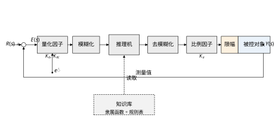
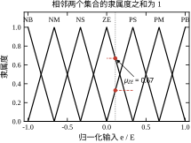
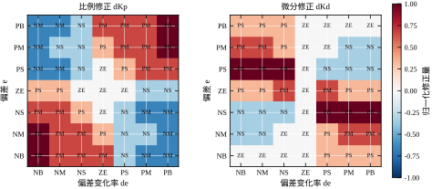
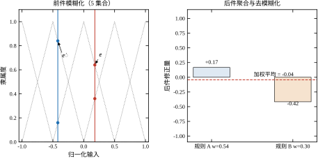
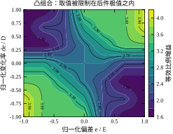
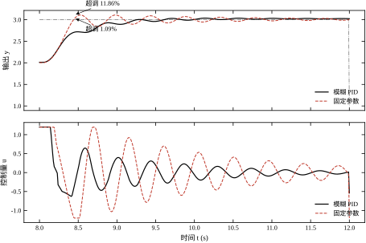
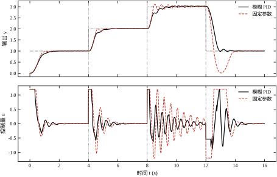
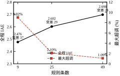
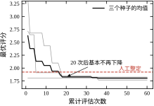
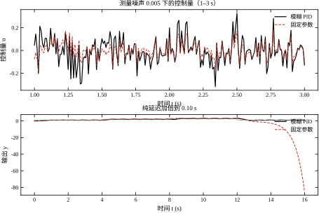

第 66 章把专家的经验写成了“如果……那么……”的硬规则，代价是每条规则都有一条明确的边界：误差一旦跨过 0.50，参数立刻跳变。为了让边界不抖，我们在边界上加了滞环；滞环又带来另一个问题——阈值附近的行为是“要么这样、要么那样”，中间没有过渡。本章换一种写法：不再问“误差是否大于 0.50”，而是问“误差有多接近大”。这个“有多接近”就是隶属度，用隶属度写规则、用加权的方式合成结论，就是模糊控制。
先看一个日常场景。调淋浴水温时，人不会去测“水温偏差 3.2 度”，也不会执行“如果偏差大于 3 度则阀门开大 15%”。人做的是模糊判断：水有点凉、凉得厉害、快好了；然后凭手感把阀门转一点点、再转一点点。整个过程中没有明确的阈值，也没有离散的档位，动作随感觉连续变化。
模糊控制就是把这种判断方式形式化。它保留规则的语言形式（“如果偏差大且正在变大，那么大幅加大输出”），但把“大”从一个确定的集合换成一个带隶属度的模糊集合：偏差 0.8 时对“大”的隶属度是 0.9，偏差 0.4 时是 0.35。同一条规则在两种情况下都会触发，只是“触发强度”不同，最终输出按强度加权。
这个替换带来三个直接后果。第一，参数随特征连续变化，控制量不会因为跨过阈值而出现台阶，第 66 章那套滞环、死区、抖振治理手段大部分可以不要。第二，规则之间不再需要严格的冲突消解：两条规则同时成立不是矛盾，而是“各占一部分权重”。第三，边界的精确位置不再敏感——把“大”的中心从 0.50 挪到 0.45，输出只是稍有变化，不会像硬阈值那样引起行为突变。
代价也很明确。硬规则的行为可以逐条列举、逐条验证；模糊规则的行为是一条连续曲面，只能抽样检查。硬规则的参数有直观的物理含义（阈值 0.50 就是 0.50）；模糊规则的参数是一组尺度因子，物理含义要绕一层才能说清。第 66 章用“可解释”换“平滑”，本章用“平滑”换“可解释”，两者的取舍在 67.11 节展开。
为了让两章可比，本章仍用第 66 章那个非线性对象
\ddot y=-2\dot y+K(y)u,\qquad K(y)=4+6y \tag{67-1}
工作点在 1 到 3 之间迁移时，静态增益从 10 变到 22，跨度 2.2 倍。设定值轨迹仍是四段：0\to1\to2\to3\to1，每段 4 s，纯延迟 0.05 s，控制量限幅 \pm1.2。
控制器采用“工况层 + 模糊修正层 + 守卫层”的结构。工况层与第 66 章完全相同，负责补偿工作点引起的增益变化；模糊修正层替换掉第 66 章的四个分区规则，用 49 条规则连续地调整 K_p,K_i,K_d；守卫层保留抗饱和与下行软着陆两条。这样两章的唯一差别就是“修正层”的实现方式：硬分区还是模糊插值。
结果先摆出来。同一轨迹上，模糊 PID 的全程 IAE 是 2.698，固定参数 PID 是 2.997，低 10.0%；最大超调 1.09% 对 50.23%，差了两个数量级；控制量总变差 27.9 对 36.6，低 23.9%。与第 66 章的专家控制相比，IAE 2.698 对 2.625 略高 2.8%，但最大超调 1.09% 对 8.22% 低得多，控制量总变差 27.9 对 43.2 也小得多。
这组数字说明的并不是“模糊比专家好”，而是两者把代价花在了不同地方：专家用硬规则把大偏差时的行为压得很死，响应快但切换生硬；模糊用连续插值把过渡做得很软，超调小、动作少，但起步偏慢——第一段的上升时间是 0.84 s，专家是 0.47 s。第 67.11 节会把这张表补全，并给出选型判据。
初学者常把“模糊”理解成“不精确”或“随便估”。这是误解。模糊控制里的每一个环节都是确定的：隶属函数是确定的三角形，规则是确定的 49 条，推理是确定的乘积运算，去模糊是确定的加权平均。给定输入，输出完全可复现，没有任何随机性。
真正“模糊”的只是知识的形式——人用“大、中、小”这样的词描述经验，模糊系统提供了把这些词映射成数值的一套运算。所以模糊控制的可重复性不比 PID 差，它与 PID 的差别在于“参数随状态变”，而不是“结果不确定”。
另一个常见误解是“模糊控制不需要模型”。它确实不需要传递函数，但需要知道三个东西：输入的物理范围（用来定归一化尺度）、输出该怎么动（用来写规则）、以及对象大概多快（用来定采样周期）。这三样本质上就是模型的粗略版本。说“不需要精确模型”是准确的，说“不需要任何模型知识”则不对。
在往下读之前，先用三个问题判断这条回路值不值得上模糊。这不是套话，三个问题分别对应本章三处最硬的结论。
第一个问题：对象增益随工况变几倍？ 本章对象从 10 变到 22，2.2 倍，模糊层的收益明显；若只变 1.3 倍，鲁棒整定就够了，模糊层带来的收益抵不过维护成本。这个问题的答案决定“要不要”。
第二个问题：超调有没有硬约束？ 本章第四段线性版超调 50.23%，压到 1.02% 是模糊层最大的功劳；若工艺允许 20% 超调，这笔收益就打对折。这个问题的答案决定“值不值”。
第三个问题：纯延迟占对象时间常数的多少？ 本章 0.05 s 对 0.5 s，占十分之一，裕度只剩 14.7°，延迟一加倍就失稳。若占比超过十分之一，模糊层不是正确的工具，该用预测控制（第 47 章）。这个问题的答案决定“够不够”。
三个问题都指向“值得”，再进入 67.2 节的原理；只要有一个明确否定，就应当考虑别的方案。这三条会在 67.11 节展开成完整的适用边界，这里先摆出来，是为了让读者带着判断读，而不是读完才发现不适用。
如果只关心“能不能用”，读 67.1 的结果预告、67.6 的性能表、67.11 的适用边界即可。如果要动手实现，67.2 到 67.5 是必须的：模糊化、推理、去模糊化三步的细节决定了实现是否正确，而离散化与量化误差决定了它能不能跑在真实控制器上。67.7 到 67.9 讨论参数与调参，其中 67.9 的两个实验（规则条数、整定预算）回答“要花多少成本”这个问题。67.10 与 67.12 是工程与代码。
先看一张总图。图 67-1 是本章采用的闭环结构：模糊层不直接产生控制量，只产生 PID 参数的修正量。图的细节留到 67.3 节第 1 步再讲，这里只需要记住“模糊层是旁挂在 PID 上的，不是替代 PID”。

普通集合用特征函数描述：元素属于集合记 1，不属于记 0。模糊集合把这个二值函数换成取值在 [0,1] 的隶属函数
A=\bigl\{(x,\mu_A(x))\mid x\in X,\ \mu_A(x)\in[0,1]\bigr\} \tag{67-2}
\mu_A(x) 读作“x 属于 A 的程度”。它不表示概率，不表示测量误差，只表示语言标签的匹配程度。误差 0.45 对“大”的隶属度是 0.6，这句话的含义是“按设计者的划分，0.45 有六成像大”，与 0.45 这个数准不准无关。
隶属函数的形状有很多选择：三角形、梯形、高斯形、S 形。本章选三角形，原因是它在离散实现里只涉及两次除法和两次比较，且“相邻集合在中点相交于 0.5”这一性质可以直接写成解析式。设论域归一化为 [-1,1]，等距划分 n 个集合，第 i 个的中心与半宽分别是
c_i=-1+\frac{2i}{n-1},\qquad h=\frac{2}{n-1},\qquad \mu_i(x)=\max\Bigl(0,\ 1-\frac{|x-c_i|}{h}\Bigr) \tag{67-3}
把 h 取成相邻中心间距，是一个刻意的设计。它保证相邻两个三角形在中点处各取 0.5，且所有三角形在任意点的隶属度之和恒为 1：
\sum_{i=0}^{n-1}\mu_i(x)=1,\qquad \forall x\in[-1,1] \tag{67-4}
这个性质叫单位分解。它不是数学上的巧合，而是后面“加权平均等于凸组合”的前提。若把 h 取小了，三角形之间会出现空隙，某些点上所有隶属度同时为零，输出就会突跳；若取大了，重叠过多，分辨率下降。图 67-2 画出了 n=7 时的七个三角形，并在 x=0.11 处标出两个非零隶属度：\mu_{ZE}=0.67、\mu_{PS}=0.33，和为 1。

式 (67-3) 的定义域是 [-1,1]，而实际偏差可以任意大。两者之间靠一次截断衔接：归一化后的输入先被压到 [-1,1]，再送进隶属函数。这个动作在代码里只有一行 np.clip，但它对闭环行为有实质影响。
截断意味着超出 E 的偏差不再被区分。本章 E=1.60，第四段阶跃 1.0 归一化后是 0.625，还没到边界；若某次阶跃是 2.0，归一化 1.25 会被压到 1.0，多出来的 0.25 不产生任何额外修正。此时模糊层的输出是一个常数（全部落在 PB 上），等效于“比例增益固定为 K_p^0(1+S_p)”。
这不是缺陷，而是有意的取舍。大偏差时该做的动作本来就只有一个——全力推，区分 1.2 与 2.0 对控制量没有帮助，反而会让规则表在大偏差区堆满几乎重复的格子。截断还带来一个好处：修正量有界。式 (67-8) 的凸包性质加上截断，使 \Delta K_p 在任何输入下都被限制在 [-1,1]，运行中不会出现“参数突然翻倍”这种事。
代价是大偏差区的自适应能力消失。如果某台设备偶尔出现远超设计工况的扰动，模糊层在那段时间里帮不上忙，系统退化成固定参数。这类扰动要靠守卫层（限幅、积分冻结）或者外层的工况判别来处理，不能指望模糊层。本章对象在四段轨迹里最大偏差恰好是 1.0，没有触发截断；若读者把这套参数搬到偏差更大的回路上，第一件要检查的就是截断比例。
还有一个容易被忽略的细节：截断后的输入落在 \pm1 上时，隶属度向量是 (1,0,\dots,0) 或 (0,\dots,0,1)，权重和为 1 的性质仍然成立，但相邻集合的隶属度为 0，插值退化成“只取端点值”。也就是说，论域边界附近的输出是不连续可导的——曲面在那里有一个折角。这个折角在正常工作区之外，不影响本章的稳定性分析，但如果回路长期贴着边界跑，折角就会变成抖动的来源。
一条模糊规则写作
R_{ij}:\quad \text{IF } e \text{ is } A_i \text{ AND } \dot e \text{ is } B_j \ \text{ THEN } \Delta K_p \text{ is } c^{p}_{ij},\ \Delta K_i \text{ is } c^{i}_{ij},\ \Delta K_d \text{ is } c^{d}_{ij} \tag{67-5}
这里采用 Takagi–Sugeno 型的后件：结论不是一个模糊集合，而是一个确定的数 c_{ij}（本章取归一化值 -1 到 1）。这样做的理由很实际：Mamdani 型后件需要再做一次重心法去模糊，计算量大且结果对离散化步长敏感；Sugeno 型后件只需加权平均，且在单位分解的前提下，加权平均就是凸组合，便于分析。
规则的前件强度用乘积 t-范数计算：
w_{ij}=\mu_{A_i}(e)\,\mu_{B_j}(\dot e),\qquad \sum_{i}\sum_{j}w_{ij}=1 \tag{67-6}
最后那个等式直接来自式 (67-4) 在两个轴上的独立成立。它是本章所有分析的基础：权重之和为 1，意味着输出一定是后件的凸组合，绝不会超出规则表里出现过的极值。
n=7 时规则总数是 49 条。图 67-3 把其中两张表画成了热图：左图是比例修正，右图是微分修正。颜色深浅表示修正量的大小，格子里的字母是语言变量缩写。可以看到两张表的结构完全不同——比例表沿“同号/反号”分块，微分表沿“接近/远离”分块。这不是随意安排的，67.3 节会解释每一块背后的意图。

给定一对输入 (e,\dot e)，推理分三步：模糊化得到两个隶属度向量，按式 (67-6) 算出 49 个权重，再加权平均得到三个修正量：
\Delta K_p=\sum_{i}\sum_{j}w_{ij}c^{p}_{ij},\qquad \Delta K_i=\sum_{i}\sum_{j}w_{ij}c^{i}_{ij},\qquad \Delta K_d=\sum_{i}\sum_{j}w_{ij}c^{d}_{ij} \tag{67-7}
因为 \sum w_{ij}=1，式 (67-7) 不需要再除以权重和。这一点在实现时很重要：很多教科书给出的公式是“加权平均除以权重和”，那是针对非单位分解的隶属函数；本章的三角划分已经满足单位分解，除法是多余的，而且会引入一次不必要的舍入误差。
从几何上看，式 (67-7) 说明输出落在 49 个后件的凸包内：
\Delta K_p\in\Bigl[\min_{ij}c^{p}_{ij},\ \max_{ij}c^{p}_{ij}\Bigr] \tag{67-8}
这条性质在 67.6 节会被用来做稳定性检验。它还有一个实用推论：规则表里的极值就是参数的极值。想让比例增益最多只放大 55%，就把后件的极值定在 \pm1，尺度因子取 0.55，不必再去检查运行中的实际取值。
图 67-5 画了一次具体的推理。输入 e=0.18、\dot e=-0.42（图为了看清交叠，用的是 5 集合划分；本章正文计算一律 7 集合），只有少数几条规则的权重非零，其中最大的两条权重分别对应“误差略正、变化率为负”与“误差接近零、变化率为负”。两条规则的后件一正一负，加权平均落在一个中间值上。这正是模糊控制平滑的来源：不是选了某一条规则，而是所有相关规则各让一步。

式 (67-5) 的结论是一个数，而不是一个模糊集合。这个选择值得单独说清楚，因为它把“模糊控制”分成了两个流派。
Mamdani 型的结论也是模糊的，比如“比例修正应该是大”。要得到控制量，必须先把所有被激活规则的结论集合按权重剪裁（取小），再合成一个总集合（取大），最后求这个集合的重心。重心法需要把输出论域离散成一串点，逐点计算隶属度，再按面积加权求中心。计算量大约是 Sugeno 型的几十倍，而且结果依赖离散步长：步长 0.01 与步长 0.05 算出来的重心能差几个百分点，表现为控制量的小台阶。
Sugeno 型把结论换成函数，零阶就是常数（本章的做法），一阶是输入的线性函数。这样一来，去模糊化退化成加权平均，没有离散化，没有重心，也没有步长参数。代价是“结论不再模糊”——规则的后件从“比例修正应该是大”变成了“比例修正是 0.8”。
这笔交换是否划算，取决于用途。若模糊控制器的价值在于“用语言表达专家经验、并让操作员看懂”，Mamdani 更贴近这个意图，因为它的中间结果也是语言量。若价值在于“平滑地调整参数、并且能分析”，Sugeno 明显更好：它把模糊性全部压缩到前件，后件是一张数值表，于是整个控制器可以写成式 (67-10) 那样的解析式，也能做凸组合与频域分析。
本章选 Sugeno，是因为后面五节都要用到解析性：67.4 的等效频率响应、67.6 的顶点裕度、67.7 的灵敏度扫描，都建立在“输出是后件的加权平均”这个基础上。若用 Mamdani，这三节只能靠仿真打点，无法给出解析结论。换句话说，Sugeno 是用一点“模糊的味道”换来了可分析性。
需要提醒的是，Sugeno 型常被批评“其实不是模糊控制，只是插值”。这个批评有一半道理：它的后件确实不模糊，增益曲面也确实等价于一张双线性插值表（见本节末的第二种视角）。但前件的模糊化不是装饰——它决定了插值基函数的形状，也决定了“哪几条规则同时起作用”。把这一层去掉、直接用网格插值，得到的是同一张曲面，但失去了“规则”这个可读的中间层。工程上要不要这一层，取决于维护者需不需要读规则表，而不是取决于数学。
得到三个归一化修正量后，按尺度因子叠加到工况基参数上：
K_p=K_p^0\bigl(1+S_p\Delta K_p\bigr),\quad K_i=K_i^0\bigl(1+S_i\Delta K_i\bigr),\quad K_d=K_d^0\bigl(1+S_d\Delta K_d\bigr) \tag{67-9}
本章取 S_p=0.55、S_i=0.70、S_d=0.35。乘性叠加而不是加性叠加，是为了让规则可以跨工况复用：低工况的基参数是 (3.80,0.05,0.90)，高工况是 (2.00,0.05,0.60)，同一张规则表对两者都给出“按比例增减”的修正，不必为每个工况单独写表。这一点与第 66 章的乘子化后件是同一种思路。
把式 (67-9) 代回，等效比例增益是 (e,\dot e) 的函数
K_p(e,\dot e)=K_p^0\Bigl[1+S_p\sum_{ij}w_{ij}(e,\dot e)\,c^{p}_{ij}\Bigr] \tag{67-10}
图 67-4 把中工况的这张曲面画了出来。曲面的取值被限制在 1.647 到 4.030 之间，恰好是 2.60\times(1\pm0.55)。曲面在四个角上最陡，在原点附近最平——角上对应“大偏差且快速变化”，两条以上规则同时以高强度触发；原点附近只有一个集合的隶属度为 1，相邻集合为 0，曲面退化成常数。

模糊控制常被引用的一条理论是万能逼近：在紧集上，任何连续函数都可以用足够多规则的 Sugeno 模糊系统以任意精度逼近。这条定理的证明思路与分段线性插值是同一件事——规则越密，插值节点越密，误差越小。
但它在工程上的指导意义有限，原因有三。第一，它说的是“存在一组规则”，没有说“怎么找到这组规则”，因此不解决设计问题。第二，它要求规则覆盖整个输入空间，而工程上规则数受验证成本限制，49 条已经是本章愿意承担的上限（见 67.9 节的规则条数实验）。第三，它只保证逼近精度，不保证闭环稳定：把对象模型逼近得再准，若控制器本身的增益选得过大，闭环照样振荡。
所以本章对这条定理的定位是“存在性背书”，而不是设计工具。真正决定成败的仍是 67.3 节的尺度选择与 67.7 节的参数含义。
式 (67-10) 可以按三种完全不同的方式理解，每种理解对应一套检验手段。把三套都摆出来，是为了在后面的分析里各取所需。
第一种是插值读法。 把规则表看成一张 7\times7 的网格数据，把三角形隶属函数看成分片线性的基函数，那么式 (67-7) 就是双线性插值。这个读法的好处是直观：模糊层不过是在查表，查不到的点靠相邻四点插值。它对应的检验手段是连续性检查——网格边上的一阶导数是否连续、边界处是否出现折角。前面提到的截断折角，用这个视角一眼就能看出来。
第二种是增益调度读法。 把 K_p(e,\dot e) 看成一个随状态变化的增益，模糊层就是一个调度器。这个读法与第 42 章的增益调度是同一族方法，区别只在调度变量：第 42 章用工况量（转速、负载），本章用误差与误差变化率。它对应的检验手段是慢变假设——调度变量变化得足够慢时，可以把每个瞬间冻结成线性系统来分析；变化太快，冻结分析就失效。
第三种是非线性反馈读法。 把控制器看成 u=k(e,\dot e)\,e 的形式，即一个增益随状态变化的比例环节。这个读法对应的检验手段是描述函数——给正弦输入，看输出的基波分量，得到等效增益与等效相位。它只能处理正弦、只能看基波，但能回答“这个非线性环节在闭环里相当于多大的增益、带来多少相位”，这正是 67.4 节要用的。
三种读法给出的数字应当互相印证。本章的实现里，插值视角给出曲面（图 67-4），调度视角给出 147 个顶点（67.6 节），反馈视角给出等效增益 2.60 到 2.89（67.4 节）。三个数字必须能对上：曲面在中工况原点的值应当等于基参数，顶点集合应当覆盖曲面的极值，描述函数在零幅值极限下应当回到基参数。任何一处对不上，说明实现里有 bug，而不是理论有问题。
式 (67-6) 用乘积做 t-范数，而多数教科书用取小。两种写法都满足“合取”的直觉——两条规则同时成立时，权重取两者中较弱的一方——但在数值上不是一回事。
三角形隶属函数是分段线性的。取小意味着 w_{ij}=\min(\mu_{A_i},\mu_{B_j})，在一个格子内部，谁小谁说了算；穿过 \mu_{A_i}=\mu_{B_j} 那条对角线时，主导者换人，权重的导数发生跳变。于是加权平均出来的增益曲面上会出现一道折线，折线两侧的斜率不同，像一张纸被折过。乘积没有这道折线：\mu_{A_i}\mu_{B_j} 在两个方向上同时光滑，格子内部是双二次曲面。
乘积也不是处处光滑。三角形在顶点处本身有折点，隶属函数的导数在那里不连续，乘积的导数也跟着不连续。区别在于折点的位置：取小的折线在格子内部，穿过整个输入空间；乘积的折点只落在隶属函数的顶点连线上，即 e 或 \dot e 正好等于某个集合中心的地方。后者与网格对齐，前者不对齐。
这个差别对本章的分析有直接影响。顶点法只用端点值，不要求可微，两种写法都能用。描述函数虽然也不要求可微，但折线会让高次谐波明显变大，基波近似变差；67.4 节报出的等效相位是在乘积写法下测的，若换成取小，那组数字只能当参考。局部线性化更敏感：折线上没有唯一切线，冻结系数模型在折线附近失去意义。
实际影响落在过渡带的宽度上，不在极值上。两种写法的后件极值相同，因此 67.6 节的顶点集合不变；变化的是权重在格子内如何分配，表现为过渡段更“软”或更“硬”。若因为要与既有设备保持兼容而必须用取小，那么规则表与尺度可以照搬，但凡是涉及相位与等效增益的结论都要重测。
设计从画结构图开始。图 67-1 是本章采用的闭环：设定值与测量值相减得到偏差，偏差与测量值变化率分别乘以量化因子 K_e、K_{ec} 归一化到 [-1,1]，送进模糊化与推理机，输出的三个修正量乘以比例因子 S_p,S_i,S_d 后叠加到工况基参数上，最后仍由位置式 PID 计算控制量。知识库（隶属函数与规则表）旁挂在推理机上，运行时不改写。
这个结构与常见的“纯模糊控制器”不同：纯模糊控制器的输出直接就是控制量，而本章的输出是 PID 参数的修正量。选择后者的理由有三。第一，PID 的积分项保证了稳态无差，纯模糊控制器要做到无差必须额外加积分环节，反而更复杂。第二，本章要与第 66 章、固定参数 PID 做同口径比较，保持“同一个 PID、只差参数来源”最干净。第三，工程上改造存量回路时，工程师更愿意接受“在 PID 外面加一层”，而不是“把 PID 换掉”。
图 67-1 里有两个容易忽略的细节。一是第二个输入取的是测量值变化率 -\dot y，不是误差变化率 \dot e。设定值阶跃时 \dot e 会出现一个幅值极大的尖峰（理论上趋于无穷），它会穿过模糊层，让所有规则瞬间偏向“快速接近”这一侧，造成一次不必要的参数跳变。用 -\dot y 就没有这个问题，这与第 44 章“微分作用于测量值”是同一条经验。二是量化因子画在模糊化之前而不是之后，强调它是“工程单位到论域”的换算，不是模糊运算的一部分。
E 与 D 的取值决定了“多大的偏差算大”。取法有一个简单规则：E 取该回路在正常运行时最常出现的最大偏差，而不是量程。本章的四段轨迹最大阶跃是 1.0（工作点从 2 跳到 3），所以取 E=1.60，让最大偏差的归一化值落在 0.625，处于 PS/PM 之间而不是顶到 PB。这样做的道理是：若最大偏差刚好顶到论域边界，所有“大偏差”都用同一个隶属度 1 表示，模糊层在大偏差区就退化成了常数，失去了分辨能力。
D 的取法要绕一层。它是变化率的尺度，量纲是“单位每秒”。本章对象的输出变化率在大阶跃起步时约 0.6 到 0.8 单位每秒（控制量饱和、增益 10 到 22），取 D=1.40 使归一化值落在 0.4 到 0.6，与 E 的量级匹配。若 D 取得过小，变化率一动就饱和，规则表右半部分形同虚设；取得过大，变化率永远在 ZE 附近，微分修正不起作用。
这两个尺度不是独立的。它们共同决定了规则平面上“轨迹走哪条路径”。E 大、D 小，轨迹会贴着横轴走，多数时间待在 ZE 列；E 小、D 大，轨迹会贴着纵轴走。本章的 (1.60,1.40) 是让轨迹在阶跃起步时斜穿 PS–PM 区，在接近时回到 ZE 附近，正好把规则表的主要区域都用上。67.7 节的单参数扫描会给出这五个参数各自的灵敏度，结论可能与直觉不同：E 与 S_p 是决定性的，D 与 S_i 在本回路上几乎无关。
集合数 n 决定分辨率。本章取 7，对应 NB、NM、NS、ZE、PS、PM、PB 七个语言值，这是工业界最常用的配置。n=5 时没有 NM/PM，过渡更粗；n=9 时多出两档，规则数从 49 涨到 81，验证成本上升。67.9 节的实验会给出三种分辨率的实测差别：9 条规则的 IAE 反而最小（2.476），但最大超调 9.02%、控制量总变差 37.1；49 条规则的 IAE 是 2.698，但超调 1.09%、总变差 27.9。也就是说，规则少的时候系统更像“开关控制”，平均误差小但动作粗暴。
写规则表有两条原则，覆盖了 49 格里的绝大多数。
第一条是看 e 与 \dot e 的符号关系。同号意味着偏差在扩大（正偏差还在变大，或负偏差还在变负），此时应当加大比例、减小阻尼，尽快把偏差推回去；反号意味着偏差在收缩，此时应当减小比例、加大阻尼，防止冲过头。图 67-3 左图的对角分块就是这条原则的体现：左上与右下两块是正修正，右上与左下两块是负修正。
第二条是看 |e| 的量级。|e| 大时积分要弱（积分分离），否则限幅期间积分会积爆；|e| 小时积分要强，用来消除稳态误差。图 67-3 的积分表（本章未画出）就是按这条原则填的：外侧两行以负修正为主，中间三行以正修正为主。
微分表则按“接近速度”填。正在快速接近时（e 与 \dot e 反号且 |\dot e| 大）给最强的正修正，正在远离时给负修正。这一条与第 66 章 Z2 的“提前刹车”是同一个意图，只是这里用连续的方式表达：不是“进入刹车区就把 K_d 乘 1.6”，而是“越接近、速度越大，K_d 加得越多”。
写完之后要做一次“人话检查”：每一格都要能翻译成一句工程师听得懂的话。翻不出来的格子，说明设计者自己也没想清楚，应当删掉或改成保守值。49 格逐格检查大约要半小时，但这半小时能挡掉后面几天的调试。
49 格里各格的权重并不相同。轨迹在规则平面上的驻留时间决定了某一格的修正量对指标的实际影响，而边界格（|e| 或 |\dot e| 接近 1 的格子）恰恰是驻留最久的地方——大偏差要持续一段时间才被消掉，饱和段更是能停留几百毫秒。
所以边界格要按“最坏情况”填，而不是按“典型情况”填。本章的三张表在这件事上的处理并不相同，值得对照看。
比例表的四个角给的是 \pm1 或 \pm2/3，没有给 \pm1：右上角（e 正、\dot e 负、快速接近）给的是 -2/3 而不是 -1。原因是这个角正好对应“快要到位”的时刻，若把比例压到基值的一半以下，剩余的小偏差就只能靠积分慢慢消，第四段的调节时间会明显变长。而左上角（e 负、\dot e 正，正在远离）给的是 +1，因为那里需要全力推。
微分表在边界处的取值普遍偏保守：靠近 |\dot e|=1 的两列大量给 ZE 或小正修正。这不是疏忽，而是防止“微分项顶到限幅”——67.4 节会看到，第四段接近目标时微分项确实顶到了 \pm1.2 的限幅，若边界格再给强正修正，控制量会在过零点附近来回冲。
积分表在边界处给负修正，这就是积分分离。|e| 大时把 K_i 压到基值的三成以下，等偏差收小再放开。本章 K_i 的基值只有 0.05，压下去之后几乎不起作用，但这一步不能省：若没有它，第四段下行时积分会在大偏差期间持续累积，退出限速后一次性释放，形成二次超调。
一个实用的检查办法是把 49 格按“四段轨迹是否会访问”分类。相当一部分格子平时不生效，一旦出现异常工况才会被激活——这些格子最容易埋雷，因为它们从未在测试中被验证过。本章没有采用“留空”的做法，49 格全部写满，因此不存在“未定义区域”；代价是未访问的格子无法通过指标验证，只能靠人话检查兜底。若改用稀疏表，建议给空格统一填保守值（比例 0、积分 0、微分小正），宁可让它们在异常时“少修正”，也不要“乱修正”。
本章用乘积推理加加权平均，理由已经在 67.2 节说明：计算量小，且单位分解保证了凸组合性质。这里补充两点工程上的考虑。
一是不要用重心法。重心法要把每个后件模糊集合离散成若干个点再求加权重心，49 条规则乘上每条 20 个采样点就是近千次乘加，在 10 ms 的控制周期里不算贵，但它引入了“离散化步长”这个额外参数，步长选得粗会让输出呈阶梯状，选得细又增加计算量。Sugeno 型后件没有这个问题。
二是权重要用乘积而不是取小。取小（min）运算是 Mamdani 推理的经典做法，它的好处是语义直观，坏处是输出对输入不光滑——取小运算在两条隶属函数相等处有折点，折点会让控制量出现细小的棱角。乘积运算是处处可微的，与本章要论证的“平滑”一致。代价是乘积会低估权重（两个 0.5 相乘只剩 0.25），但式 (67-6) 的权重和仍为 1，低估只影响各条规则的相对大小，不影响凸组合性质。
前三步做完，模糊层已经能输出三个修正量，但闭环还没跑过。联调的顺序建议是“先线性、后模糊”：先把工况基参数调好（这三组参数直接取自第 66 章的整定结果），确认固定参数下系统在每个工况都稳定；再打开模糊层，从 S_p=S_i=S_d=0 开始逐步加大，观察指标怎么变。
这个顺序的好处是每一步都可归因。若一上来就带着模糊层调基参数，指标不好时无法判断是基参数错了还是规则表错了。本章的三个尺度因子最终取 (0.55,0.70,0.35)，就是在这个顺序下试出来的：先固定 S_i=S_d=0 调 S_p，再调 S_i 看稳态，最后调 S_d 压超调。
联调时还要把守卫层装上。模糊层再平滑，也挡不住积分在限幅期间积爆，也挡不住下阶跃时控制量冲到底。本章保留了两条守卫：饱和时冻结积分、大幅负偏差时限速并冻结积分。
两条守卫的作用方向并不一致，这一点要靠实测才能看清。关掉“饱和冻结积分”，四段的 IAE 都略微变差（第四段从 1.101 涨到 1.155），但第四段的超调反而从 1.02% 降到 0.58%；关掉“下行限速”，第四段超调从 1.02% 涨到 13.64%。也就是说，一个是用超调换 IAE，另一个是纯粹压超调，取舍方向相反。67.6 节会把这两个数字放在一起讨论。这条结论与第 66 章并不完全相同，原因在于第 66 章的超调主要来自参数切换，而本章的超调主要来自下行段的增益失配。
把模糊层与 PID 写在一起，闭环的控制律可以写成
u(t)=K_p(e,\dot e)\,e(t)+K_i(e,\dot e)\int_0^t e(\tau)\,d\tau-K_d(e,\dot e)\,\frac{dy}{dt}, \tag{67-11}
其中三个增益不再是常数，而是偏差与变化率的连续函数。这个形式和线性 PID 只差“系数会变”，但它带来的性质变化远不止“系数会变”这么简单：闭环从一个线性时不变系统变成了一个准线性变参数系统（quasi-LPV）——参数随状态变化，但在任意一个瞬间，闭环仍是一个线性系统。
这个视角很有用。它意味着分析时可以“冻结”参数，把某一点 (e,\dot e) 上对应的那组 (K_p,K_i,K_d) 当作常数，算这一点的相位裕度、带宽、灵敏度；然后再让工作点移动，看这些指标怎么漂。第 66 章的专家控制做的是同样的事，只是它的参数是分段常数，切换瞬间不连续；本章的参数是连续插值，没有切换瞬间。两章的区别全部集中在这一点上。
写成 quasi-LPV 形式还有一个好处：它把“模糊”这个听起来玄的词，还原成了工程师熟悉的东西——增益调度（gain scheduling）。区别只在于调度的插值函数不是查表加线性插值，而是由隶属函数与规则表复合出来的双线性插值。第 42 章的增益调度需要设计者手工给出几个工作点的参数并指定插值方式；本章把这些工作从“手工指定”变成“由规则表隐式给出”。代价是可解释性下降：调度表上每一格的权重还能说清，但复合出来的曲面已经不容易用一句话概括。
抽象地说“参数会变”没有说服力，算两个点更直接。取中工况基参数 K_p^0=2.60、K_d^0=0.60，尺度 E=1.60、D=1.40、S_p=0.55、S_d=0.35，考虑同一偏差 e=0.9 下的两种运动状态。
第一种是偏差在扩大：e=0.9 且 \dot e=+0.5。归一化后 e/E=0.56，落在 PS 与 PM 之间（\mu_{PS}=0.31,\mu_{PM}=0.69）；\dot e/D=0.36，也落在 PS 与 PM 之间。此时推理出的比例修正量约为 +0.36，K_p=2.60\times(1+0.55\times0.36)=3.11，比基值高 20%；微分修正量为 0，K_d 保持 0.60。这是“全力推进”的配置。
第二种是偏差在收缩：e=0.9 但 \dot e=-0.5。归一化的偏差分量不变，变化率分量落到 NS 与 NM 之间。比例修正量变成约 -0.34，K_p=2.60\times(1-0.19)=2.11，比基值低 19%；微分修正量变成 +0.54，K_d=0.60\times1.19=0.71。这是“提前刹车”的配置。
两个点的偏差完全相同，比例增益却相差 47%，微分增益相差 18%。这个差距就是模糊层在一个阶跃过程中持续做的事情：偏差从 1.0 掉到 0 的路上，K_p 一路从 3.1 收到 2.1，K_d 一路从 0.6 加到 0.7。线性 PID 做不到这一点，它只能选一个折中的常数——选大了超调，选小了慢。
这也解释了 67.2 节式 67-10 里那个看起来很朴素的乘性叠加，为什么能覆盖从 1.647 到 4.030 的整个增益范围：S_p=0.55 配上 \Delta K_p\in[-1,1]，理论上限就是 \pm55\%，实测曲面正好顶到这两个边界。曲面没有超出边界，是单位分解的直接后果——凸组合不会外推。
上面的算例说的是“某一瞬间的增益”。要判断它对回路稳定性的影响，还得看它在不同频率下的行为。办法是描述函数：给模糊层的比例通道喂正弦 e=A\sin\omega t，取输出 u=K_p(e,\dot e)e 的基波分量，看它相对输入的幅值比与相位差。
实测三组幅值、三个频率，结果如表 67-1。
| 幅值 A | 频率 \omega | 等效增益 | 等效相位 |
|---|---|---|---|
| 0.4 | 2 | 2.605 | +3.4° |
| 0.4 | 6 | 2.615 | +6.2° |
| 0.4 | 12 | 2.617 | +6.5° |
| 0.8 | 2 | 2.732 | +9.5° |
| 0.8 | 6 | 2.732 | +11.1° |
| 0.8 | 12 | 2.730 | +11.3° |
| 1.2 | 2 | 2.893 | +11.4° |
| 1.2 | 6 | 2.879 | +12.9° |
| 1.2 | 12 | 2.875 | +13.0° |
表 67-1 有三件事值得注意。
第一，小信号极限回到基参数。 A=0.4 时等效增益 2.605，与 K_p^0=2.60 只差 0.2%。这是一次自洽性检验：幅值趋于零时，\Delta K_p 在原点附近近乎为零（曲面在原点是平的），描述函数必须退化成常数增益。若这一项对不上，说明曲面在原点有偏置，也就是规则表填错了。
第二，幅值越大，等效增益越高，但远低于凸包上界。 A=1.2 时 2.89，只比基值高 11%；而式 (67-8) 的凸包允许到 4.03。差距来自“平均”：正弦扫过一个周期，正修正与负修正各占一半，加权平均后互相抵消了大半。这提醒我们，顶点分析是逐点最坏，描述函数是周期平均，两者回答的是不同问题，不能拿 4.03 去吓唬人，也不能拿 2.89 去证明安全。
第三，也是最反直觉的一条：相位是超前的，3° 到 13°。 一个静态的、无记忆的非线性环节，居然在基波上表现出相位超前。机制不难解释：K_p 在“e 与 \dot e 同号”（偏差正在扩大）时被调大，而这一区间恰好分布在 e 的过零点附近；K_p 在“反号”（偏差在收缩）时被调小，这一区间分布在 e 的峰值附近。把过零点附近抬高、把峰值附近压低，等效于给波形加了一点微分，而微分就是相位超前。
这条性质有实际意义：它说明模糊层不会像滤波器那样吃掉相位裕度，反而补一点。这也解释了为什么 67.6 节按“冻结顶点”算出的 45° 最小裕度，在闭环实测中并没有被额外的相位滞后进一步侵蚀——第 67.5 节要扣的那 36° 全部来自纯延迟，不来自模糊层本身。
描述函数也有它算不出的东西：高次谐波、跨格折痕引起的分岔、以及极限环。表 67-1 只保留基波，等于假设“其余谐波被对象滤掉了”——在本章对象（二阶、带宽约 2 rad/s）上这个假设基本成立，因为规则表折痕产生的高次谐波主要在 10 rad/s 以上，被对象衰减了 20 dB 以上。若换一个宽带对象，这个假设就不成立，描述函数的结论要打折。
式 67-8 的加权平均有一个直接推论：任一时刻的参数向量 \theta=(K_p,K_i,K_d) 都落在 49 个后件向量构成的凸包内。把 49 个顶点逐个代入闭环，得到 49 个“顶点系统”，再乘上三个工况就是 147 个。
这 147 个顶点系统的相位裕度实测为：最小 45.3°，中位 54.4°，最大 66.7°，没有一个低于 30°。这个结果比预期好，原因不难找：顶点上的参数是极端组合（三个修正量同时取 +1 或同时取 -1），而实际轨迹只会用到其中一部分；即便在最坏顶点上，K_p 也只有基值的 1.55 倍，而基参数本身是按裕度 50° 以上整定的。
这组数字是在连续模型上算的，没有算进 0.05 s 的纯延迟。把延迟补进去，中工况基参数下的裕度会从 50.9° 掉到 14.7°（67.5 节给出这次折算），所以“45° 以上”只说明规则表本身没有把增益推到危险区，不代表实际回路有 45° 的余量。
必须说清这个检验的地位：它只是必要条件，不是充分条件。理由有两条。第一，参数随时间变化，闭环是变参数系统，“每个冻结时刻都稳定”不蕴含“整体稳定”——参数变化率足够快时，即便每一点都稳定，系统也可能失稳（这一点在第 42 章增益调度里已经讨论过）。第二，凸组合的稳定性论证通常需要一个公共 Lyapunov 函数；本章没有构造，只是逐点验证。所以这个检验的用途是排除明显不合格的设计：若某个顶点裕度只有 10°，那实际运行中一旦轨迹经过该顶点附近，振荡几乎必然发生。反过来，147 个顶点全部在 45° 以上，只能说明“没有明显雷区”，不能说明“一定不会失稳”。真正的稳定结论仍要靠仿真遍历工况。
把每个瞬间冻结成线性系统来分析，前提是参数在一个闭环时间常数内几乎不变。这句话可以量化：设参数的相对变化率为 \rho=|\dot K_p|/K_p，闭环时间常数约 1/\omega_c，那么冻结分析成立的条件是
\rho/\omega_c\ll1 . \tag{67-12}
本章第三段，K_p 在约 0.9 s 内从 3.1 收到 2.1，\rho\approx1.11/2.60\approx0.43\ \mathrm{s^{-1}}，而 1/\omega_c\approx0.079 s，乘积约 0.034，比 1 小一个半数量级。这就是为什么前面那些“冻结在某个工作点”的算例能与仿真对上：参数确实变得足够慢。
反过来看，这个判据也给出了危险的边界。若把 S_p 从 0.55 提到 2.0，K_p 在同样的 0.9 s 内可以翻两倍，\rho 涨到 2.2\ \mathrm{s^{-1}}，乘积变成 0.17，仍然小于 1，但已经不能算“远小于”。若再把 E 缩小一半，误差在更早的阶段就进入饱和区，参数可能在 0.1 s 内翻完，\rho\approx20\ \mathrm{s^{-1}}，乘积 1.6——冻结分析彻底失效。此时顶点裕度全绿也没有意义，因为轨迹在参数空间里跑得比闭环动态还快，系统行为由“参数走过的路径”决定，而不是由“路径上每一点的性质”决定。
这条判据对调参有直接指导：放大 S 因子之前，先算一下 \rho/\omega_c。它比“试试看会不会振”快得多，也比凭经验设一个上限更可靠。本章把三个 S 定在 0.35 到 0.70 之间，除了保守，也是为了让这个乘积留在 0.05 以下。
图 67-6 是第三段（工作点从 2 跳到 3）的阶跃响应，两条曲线共用同一个对象、同一个抗饱和、同一套守卫规则，差别只在参数来源。

模糊自整定的最大超调是 1.09%，固定参数是 11.86%，相差十倍。从上面的算例可以看出这个差距的来源：固定参数的 K_p=2.60 是按中工况整定的，在 2→3 这段实际处于高工况边缘（y 从 2 涨到 3，K(y) 从 16 涨到 22），对象增益比整定点高，等效开环增益偏高，于是冲过头；模糊层在接近目标时把 K_p 收到 2.1 附近，同时加阻尼，把这段多出来的增益抵掉了一部分。
但图 67-6 的下半部分不好看：阶跃后 8.2 s 到 8.6 s 这 0.4 s 里，控制量从 +0.12 甩到 -0.62 再回到 +0.64，峰峰值 1.26，单拍最大变化 0.30。这个幅度不算小，必须解释清楚，否则“平滑”两个字就站不住。
原因有两层，都能从轨迹里读出来。第一层是微分项顶到限幅。这段滤波后的 \dot y 冲到 2.5 单位每秒，K_d 被推到 0.81，K_d\dot y 算出来是 2.04，被 \pm1.2 的微分限幅（1.0\times U_{\max}）截平，所以微分项从 8.20 s 到 8.40 s 一直贴在 -1.2 上。第二层是比例项快速缩水：同一区间 K_p 在 1.27 到 1.68 之间摆动，而偏差从 0.79 掉到 0.33，K_p e 从 1.29 掉到 0.56。两项一减，控制量从 +0.12 一路滑到 -0.62。8.55 s 之后 \dot y 降到 0.1 以下，微分项突然松绑，控制量又跳回 +0.64。所以这不是数值噪声，而是“微分项顶在天花板上、比例项往下掉”共同造成的过零往返。
单位分解保证的是“隶属度之和为 1”，不是“输出对输入无限光滑”。三角形隶属函数只给出 C^0 连续，规则表在格与格之间有折痕；折痕本身无害，但当折痕与微分限幅叠在一起时，就会出现上面的过零往返。这一点在 67.9 节的噪声实验里还会放大：噪声让 \dot y 抖动，微分项在限幅附近来回触发，模糊 PID 的控制量总变差从 27.9 涨到 147.8，而固定参数 PID 只从 36.6 涨到 114.5——抖动的绝对增量相当，但因为模糊版本的基线更低，相对恶化更明显。
第 66 章的规则切换是硬切换，必须在阈值上加 0.85 的滞环，否则工作点贴着阈值抖动时参数会逐拍跳变。本章不需要这个装置，因为插值是连续的：工作点从低工况移到中工况，参数不是跳过去，而是沿着基参数的变化趋势滑过去——虽然本章的工况层仍是硬切换（三组基参数是离散的），但工况边界（1.3 与 2.3）离四段轨迹的实际驻留区间较远，抖动风险小得多。
这是模糊控制相对专家控制最实在的一个好处：同样的规则数量，模糊版本不需要额外的抗抖装置。代价是每条规则的语义被“稀释”了——专家控制里“进入 Z2 就把 K_d 乘 1.6”这句话是精确的、可验证的；模糊控制里“接近时加大阻尼”只能验证方向，验证不了幅度，幅度是由 S_d 与规则表的数值隐式决定的。可解释性的这一升一降，在 67.11 节还会展开。
连续域的式 67-11 落到控制器里就变成
u(k)=K_p(k)\,e(k)+K_i(k)\,T_s\sum_{i=0}^{k}e(i)-K_d(k)\,\frac{y(k)-y(k-1)}{T_s}, \tag{67-13}
式 67-13 与连续式的差别只有两处：积分变成累加，微分变成差分。模糊层本身不受影响——它仍是把 (e,\dot e) 映射成三个修正量的静态映射，采样只决定这个映射被“多久问一次”。
本章取 T_s=10 ms，对象积分子步 5 次，纯延迟 5 拍（0.05 s）。微分先经过一阶低通，时间常数 T_{\mathrm{lp}}=0.05 s，实现上写成
\alpha=\frac{T_s}{T_{\mathrm{lp}}+T_s},\qquad \dot y_f(k)=\dot y_f(k-1)+\alpha\big[\dot y(k)-\dot y_f(k-1)\big]. \tag{67-14}
这种写法比直接存两个历史点再差分更好：\alpha 随 T_s 自动调整，滤波的时间常数恒为 T_{\mathrm{lp}}。若写成固定的差分系数，改采样周期时滤波带宽会跟着变，噪声抑制特性和微分相位补偿会一起漂——这是工程上很常见的一处隐蔽错误。
真实控制器不是“采样瞬间就把控制量送出去”，而是“采样—计算—下一个周期送出”，所以除了对象的 5 拍延迟，还有 1 拍计算延迟，合计 6 拍 0.06 s。本章仿真里只算了 5 拍，这一点要在指标解读时记住。
延迟的代价可以算清楚。中工况基参数 (2.60,0.05,0.60) 配对象 G(s)=20/[s(s+2)]，连续域穿越频率 12.66 rad/s，相位裕度 50.9°。把 0.05 s 延迟用四阶 Padé 近似补进去，裕度掉到 14.7°；延迟再加倍到 0.10 s，裕度变成 -21.6°，线性意义上已经失稳。
这三个数字解释了本章的两件事。第一，延迟加倍实验里模糊 PID 的超调从 1.09% 涨到 29.16%，不是规则表失灵，而是相位预算被吃光——14.7° 的裕度本来就只够勉强不振荡，再砍一半必然冲。第二，实际运行却比线性预测温和得多（延迟加倍时 IAE 4.096 而不是发散），原因是控制量长时间饱和，有效开环增益远低于名义值，饱和在替裕度买单。
按同样的办法算采样周期的影响：零阶保持引入的等效相位滞后约为 \omega_c T_s/2，在 \omega_c=12.66 rad/s 处，T_s=10 ms 只贡献 3.6°，T_s=20 ms 贡献 7.3°。与延迟的 36° 相比，采样周期是次要矛盾。所以本章的选择是：周期按计算量定，延迟按物理定，不要指望缩短周期来换稳定性。把 T_s 从 10 ms 缩到 1 ms，延迟仍是 0.05 s，裕度还是 14.7°。
模糊层对量化的敏感度比线性 PID 高，因为它的增益是输入的连续函数，输入一量化，增益就变成阶梯。
算一笔账。偏差论域是 [-E,E]=[-1.6,1.6]，七个集合把论域切成六格，每格宽 2E/6=0.533。表内后件每隔一格变化 1/3，对应 K_p 变化 2.60\times0.55\times(1/3)=0.477，所以 \mathrm{d}K_p/\mathrm{d}e 最大约 0.477/0.533=0.894（每单位偏差）。
若采样是 8 位、量程 \pm2.5，一个 LSB 是 5/256=0.0195，对应的增益台阶是 0.894\times0.0195=0.017，占基值 2.60 的 0.67%。这个量级在多数回路上可接受，但如果回路本身裕度只有 15°，0.67% 的随机增益台阶叠加在格线附近，足以在稳态时维持一个很小的极限环。若是 12 位，LSB 降到 0.0012，增益台阶只有 0.04%，可以忽略。这就是为什么现代工程上量化基本不是问题，而八九十年代的模糊芯片必须专门处理它。
输出侧的量化影响小得多：12 位 DAC 在 \pm1.2 上分 4096 级，LSB 相当于满量程的 0.024%，远小于执行器的死区。
模糊层每拍要做的运算可以数清楚：两个输入各算 7 个三角形隶属度（14 次减法、取绝对值、比较），外积得到 49 个权重（49 次乘法），再与三张表做 147 次乘加，最后三个除以同一个权重和。
在 CPython 上实测，单次 fuzzy_delta 调用平均 23.3 µs，其中隶属函数占 6 µs 上下；相对 10 ms 周期占 0.23%。这个数字对嵌入式没有参考价值（Python 的开销主要来自解释器和 NumPy 的调用边界），但说明运算量确实很小：换成一维数组加循环的定点 C，运算量级是几百条指令。
存储更不是问题：三张 7\times7 的 int16 表共 294 字节，加上两组断点共 28 字节，总共不到 0.5 KB。
真正需要权衡的是“实时算”还是“预存整张曲面”。若把 (e,\dot e) 在 61\times61 的网格上预先算好三个增益，双线性插值查表，存储是 61\times61\times3\times2=22.3 KB；101\times101 则是 61 KB。前者在 16 位单片机上还放得下，后者就得外扩存储。而实时算的方案只需要 300 字节的表加十几行代码，代价是每拍几百条指令。在存储紧张的场合实时算更划算，在算力紧张的场合查表更划算，这条权衡与第 66 章的规则表查表完全同构。
这个权衡可以量化。同一台机器上把两种做法各跑两万次：在线推理（含隶属函数、外积、三次加权求和）平均 23.3 µs，61\times61 网格的四点双线性插值平均 2.0 µs，差约 12 倍。换算到 10 ms 周期，在线推理占 0.23%，查表占 0.02%——两者都远低于“需要注意”的门槛。所以在本章的周期下，选择依据不是算力，而是存储：22.3 KB 换 21 µs 的每拍节省，只有在周期压到 1 ms 以下、或者控制器上同时跑十几个回路时才有意义。
顺便说一下这 12 倍的来源，它不只是“少算”，而是两种做法的复杂度不同：在线推理的耗时随规则数近似线性增长（49 条就是 147 次乘加），查表则与规则数无关，只与网格分辨率有关。若把规则表扩到 9\times9（81 条），按 81/49 线性外推，在线耗时会涨到约 38 µs，查表仍是 2 µs。规则越密，查表越划算，这是 67.9 节讨论规则条数时容易被忽略的一笔账。
还有一条常被忽略：本章三张规则表都不是中心对称的。比例表在“偏差扩大”与“偏差收缩”两侧取相反的修正，积分表在大偏差与小偏差上取相反的符号，所以不能靠“只存一半、另一半点对称”把存储减半。若设计者强行把表做成中心对称来省存储，就会丢掉“接近时减速”这个最关键的非对称性——省下 150 字节，赔掉全部超调性能。
工业现场多用定点 DSP 或 16 位单片机，本章代码是双精度浮点，定点化时要处理三处。
第一是权重和不为 1。式 67-8 的除法在浮点下能把和归一到 1，定点下 49 个 Q15 权重相加会有几个 LSB 的误差。若代码里图省事，直接用“权重乘以 2^{-15}”而不做归一化，凸组合性质就破坏了，最坏情况下三个增益会整体偏大或偏小千分之几。这个偏差本身不大，但它随工作点变化，相当于引入了一个慢变的增益扰动。稳妥做法是保留除法，用一个 32 位累加器存权重和，再做一次除法。
第二是中间结果要 32 位。权重是 Q15（最大 32767），后件是 \pm1000 的整数，两者相乘是 3.3\times10^7，超出 16 位。49 项累加后接近 1.6\times10^9，仍在 32 位有符号范围内，但已经接近极限（2.1\times10^9），所以后件不宜取得比 \pm1000 更细。
第三是限幅和积分冻结要用同一个 u(k-1)。守卫判据里的 \mathrm{sign}(u_{k-1}) 必须是真正送进执行器的那个值（限幅之后），不是限幅之前的计算值。若取错，饱和期间积分仍在累加，抗饱和等于没装。这一条在浮点代码里同样成立，只是定点下更容易因为“变量复用”而出错。
采样周期不一定只有一个。现代控制器常见的结构是：电流环 100 µs、速度环 1 ms、外层的参数调整 10 ms 甚至更慢。模糊层属于最后一档，因为它的输出是 PID 的参数，而参数本来就该比控制量变得慢。
慢多少有判据。被调参数的变化时间尺度如果远大于闭环时间常数，就可以近似看作“分段常数”，每一段内用冻结参数分析。量化的说法是：模糊层的更新周期 T_f 应满足 \omega_c T_f\ll1，工程上取 \omega_c T_f\le0.1 比较稳妥。本章 \omega_c\approx12.7 rad/s，对应 T_f\le8 ms。取 10 ms 略超一点，代价是零阶保持带来的附加相位滞后 \omega_cT_f/2\approx3.6°——与采样本身贡献的量级相同，可以接受。
若把模糊层放到 50 Hz（T_f=20 ms），附加滞后 7.3°；放到 10 Hz（100 ms），滞后 36°，正好等于本章全部延迟的贡献。这就是“模糊层可以慢，但不能太慢”的量化边界。现场常见的错误是把模糊层塞进一个 100 ms 的慢任务里图省事，结果裕度被悄悄吃掉三分之一，而指标上看不出明显原因。
分核执行的另一个好处是算力核算变得清楚。本章单拍推理 23.3 µs，按 100 Hz 跑，一秒占用 2.33 ms，即 0.23% 的单核算力。即便同时跑八个回路，也只用 2%。真正吃算力的是内环的电流控制，不是模糊层——这一点常被误解，以为“智能控制一定很贵”。
反过来说，把模糊层跑得比必要更快也没有收益。67.5 节末尾的周期细化实验给出了直接证据：T_s 从 10 ms 缩到 2.5 ms，IAE 从 2.698 变到 2.738（几乎不动），超调从 1.09% 降到 0.03%，控制量变差从 27.9 降到 14.1。也就是说，细化周期改善的是“抖动”与“过冲尖峰”，不是“平均误差”。若某台设备的主要问题是 IAE 偏大，缩周期帮不上忙，该去调尺度或规则表。
最后要说清一个容易被误解的点：采样让模糊层“看不见”两次采样之间的变化。若偏差在 10 ms 内穿过整个论域，模糊层只在两端各看到一次，中间的过程全部丢失。本章对象的最高动态是 s=-2 的极点，时间常数 0.5 s，10 ms 只占 2%，不存在这个问题；但如果换成一个时间常数 30 ms 的快速回路，同样的规则表就必须配 1 ms 的周期，否则模糊层看到的“轨迹”是跳跃的，规则表的连续性假设不成立。
判断标准很朴素：控制周期应小于对象最快时间常数的十分之一。本章是 10 ms 对 500 ms，余量 50 倍，这条法则对本回路相当宽松；真正接近临界的是 0.05 s 的纯延迟——它已经是对象时间常数的十分之一。
“周期够用”不该只靠经验法则判断，可以实测。把纯延迟固定在 0.05 s（拍数随周期等比增加），只把周期从 10 ms 收到 5 ms 和 2.5 ms，四段轨迹的指标如下。
| 周期 | 延迟拍数 | 全程 IAE | 第三段超调 | 控制量总变差 |
|---|---|---|---|---|
| 10 ms | 5 | 2.698 | 1.09% | 27.9 |
| 5 ms | 10 | 2.730 | 0.03% | 15.5 |
| 2.5 ms | 20 | 2.738 | 0.04% | 14.1 |
IAE 基本不动（2.698 到 2.738，差 1.5%），说明积分型指标对周期不敏感——因为延迟没变，闭环的主导动态没变。但超调从 1.09% 掉到 0.03%，控制量总变差从 27.9 掉到 14.1，两者都接近腰斩。这说明 67.4 节里那段过零往返有很大一部分不是控制律的问题，而是采样与微分限幅的交互：周期越粗，\dot y 的差分量越大，越容易顶到限幅。
这条实测给出一个很实用的诊断顺序：如果现场看到控制量抖动但指标还过得去，先怀疑采样周期与微分限幅，而不是急着改规则表。把周期减半的代价是每拍的计算预算减半（本章的模糊层在 CPython 上只占周期 0.25%，翻倍也无所谓），收益是抖动减半。反过来，如果算力紧张，把周期放到 20 ms，按上面的趋势抖动会翻倍，但 IAE 仍然在 2.7 附近，属于“能用但不好看”。
还有一类问题更隐蔽：代码能跑、指标也不差，但和设计意图对不上。常见的有三种——把 -\dot y 写成了 \dot e，把量化因子乘在了除法后面，把 S_p 乘在基值而不是修正量上。这三种错误都不会让系统发散，只会让“调参经验”失效：你以为在调规则表，实际在调一个完全不同的映射。
排查办法是打印中间量而不是看最终指标：取一个已知的输入点，手工算出三个修正量，与代码打印的 delta 对照。本章在 fuzzy_delta 里保留了返回值，就是为了这个用途。若对照不上，先查符号（-\dot y），再查归一化的除法顺序，最后查乘性叠加的位置——这三处的错误率占八成以上。
模糊控制没有像线性系统那样一条通用的稳定性定理。工程上能做的是三层递进的检验，每一层的结论都比上一层弱，但成本更低。
第一层是冻结参数下的裕度。把某个工作点的 (e,\dot e) 固定，参数就成了常数，闭环是线性的，可以直接算相位裕度。本章在 147 个顶点上做过这件事，最小 45.3°、中位 54.4°（见 67.4 节），但没有算延迟。把 0.05 s 延迟补进去，中工况基参数的裕度从 50.9° 掉到 14.7°（见 67.5 节），仍然为正，说明小信号意义下闭环稳定，但余量已经很薄。
第二层是凸包意义上的必要条件。若参数在凸包内任意取值都稳定，则系统在任何工作点都“逐点稳定”；反过来，只要有一个顶点不稳定，就必然存在一段轨迹会经过该顶点附近并失稳。这一层能排除坏设计，不能证明好设计。
第三层是全工况仿真。把设定值走过所有工况、把所有守卫都打开、把噪声和延迟都加上，看指标是否可接受。这一层最接近真实，但只覆盖被仿真过的工况。三层都过，不等于“已证明稳定”，只等于“没有找到不稳定的证据”。这句话不好听，但它是模糊控制目前的真实处境。
表 67-2 是四段轨迹的分段指标。两列控制器共用同一对象、同一采样、同一抗饱和、同一套守卫，区别只在参数来源：模糊版按 (e,\dot e) 实时修正，线性版固定取中工况的 (2.60,0.05,0.60)。
| 段 | 控制器 | 超调 | 上升时间 | 调节时间 | IAE |
|---|---|---|---|---|---|
| 1（0→1） | 模糊 | 0.01% | 0.84 s | 1.59 s | 0.633 |
| 1（0→1） | 线性 | 0.01% | 0.55 s | 1.33 s | 0.568 |
| 2（1→2） | 模糊 | 0.20% | 0.71 s | 1.39 s | 0.472 |
| 2（1→2） | 线性 | 2.07% | 0.34 s | 1.47 s | 0.404 |
| 3（2→3） | 模糊 | 1.09% | 0.71 s | 2.40 s | 0.492 |
| 3（2→3） | 线性 | 11.86% | 0.25 s | 3.79 s | 0.439 |
| 4（3→1） | 模糊 | 1.02% | 0.53 s | 1.31 s | 1.101 |
| 4（3→1） | 线性 | 50.23% | 0.32 s | 1.93 s | 1.586 |
表 67-2 里有一件必须先说清的事：模糊版在三段的 IAE 上都略差于线性版，第一段 0.633 对 0.568，第二段 0.472 对 0.404，第三段 0.492 对 0.439。全程 IAE 之所以仍以 2.698 对 2.997 领先，全部来自第四段——线性版在 3→1 的大幅下阶跃上超调 50.23%，IAE 1.586，几乎把前三段攒下的优势赔光。
图 67-7 把这件事画得很清楚：第四段结束时，线性版的输出在 1.0 附近来回摆了很久，模糊版则早早贴住设定值。

所以对本章结果的诚实概括是：模糊自整定买到的是大扰动下的稳定性，而不是全程的快速性。如果这类回路的设定值很少大幅跳变，主要扰动是小幅波动，那么本章的模糊层带来的收益会比表 67-2 少得多，甚至为负——因为它在小偏差区的修正很弱，白白多了一层计算。
第一段（0→1）模糊版慢 0.29 s，原因可以从增益轨迹里读出来。起步时 K_p=4.41（低工况基值 3.80 叠加 +16\% 的修正），K_d=0.90。随着输出起来，\dot y 变正，第二输入 -\dot y 变负，偏差与它的符号相反，规则表立刻进入“偏差在收缩”的分支：K_p 一路掉到 0.5 s 时的 2.41，K_d 一路涨到 1.20。
也就是说，模糊层在偏差还有 0.6 的时候就开始大力刹车了。而这一段的线性基线用 K_p=2.60、K_d=0.60，本来就不超调（0.01%），刹不刹车无所谓。模糊层把“防超调”的力气花在了一个不需要防超调的地方，代价就是上升慢了 0.29 s。
这个反例说明规则表的“符号判据”有一个隐含前提：大偏差意味着有超调风险。在本章这个对象上，低工况的增益只有 10，加上限幅 1.2，稳态根本冲不过头；符号判据提前触发只会拖慢。要修也很简单——把低工况的 S_p、S_d 单独调小，或者给规则表加一条“低工况时抑制刹车”的前件。本章没有这么做，因为三组基参数共用一张规则表是设计目标之一（否则规则数要乘三）；代价就是承认第一段略慢。
式 67-10 的乘性叠加有一个不能越过的边界：
1+S_p\Delta K_p>0\quad\forall\,\Delta K_p\in[-1,1]\ \Longrightarrow\ S_p<1. \tag{67-15}
理由很直白：\Delta K_p 可以取到 -1，若 S_p\ge1，对应的顶点上 K_p\le0，比例作用反号，那已经不是“整定”，而是换了一个控制器。S_i、S_d 同理。
这条边界在实践中比它看起来更容易踩到。表 67-3 是只改 S_p、其余参数不动时的实测。
| S_p | 顶点最小裕度 | 低于 30° 的顶点 | 全程 IAE | 最大超调 | 控制量变差 |
|---|---|---|---|---|---|
| 0.55 | 45.3° | 0/147 | 2.698 | 1.09% | 27.9 |
| 0.80 | 42.2° | 0/147 | 3.310 | 1.60% | 26.9 |
| 1.00 | 40.1° | 0/147 | 3.859 | 2.31% | 37.7 |
| 1.50 | -3.6° | 30/147 | 5.694 | 1.45% | 74.7 |
| 2.00 | 32.4° | 0/147 | 8.656 | 2.57% | 101.4 |
表里有两处值得注意。一是性能在 0.55 附近最好，加大 S_p 反而一路变差，说明“修正越强越好”的直觉是错的：修正强了，增益在阶跃过程中摆动过大，等效开环增益的平均值反而偏离整定点。二是 S_p=2.00 时顶点统计又“变好”了（最小裕度 32.4°、0 个低于 30°），这不是系统变稳了，而是一部分顶点的比例增益已经是负数，那些顶点算出来的裕度没有物理意义，正负号已经让回路性质变了。所以表 67-3 最后一行只能当作“模型失效”的证据，不能当作设计参考。
把本章跑过的所有工况归一下类，失效只有三种形态，每一种的兜底手段不同。
第一种是饱和引起的积分积爆。 控制量顶到限幅后误差仍在，积分继续累加，退出饱和时积分已经很大，输出必然冲过头。本章用“饱和时冻结积分”兜底，判据是 |u_{k-1}|\ge0.95U_{\max} 且 \mathrm{sign}(u_{k-1})=\mathrm{sign}(e_k)。
但这条守卫在本章的实测效果很微妙，值得单独说一句：关掉它，四段的 IAE 各涨一点（第一段 0.633→0.638，第四段 1.101→1.155），第四段的超调却从 1.02% 降到 0.58%。两个方向都朝不利的一侧只动了一点点，说明本章第四段的超调根本不是积分积爆造成的——下行时控制量被“下行限速”锁在 -0.45U_{\max}，积分没有机会涨到很大。真正压住第四段超调的是另一个守卫：关掉下行限速，超调从 1.02% 涨到 13.64%。
所以“抗饱和”这个名字容易让人误以为它总在压超调。它压的是积分积爆型的超调，本章的第四段不是这一类。到底是哪一类，要看控制量在超调发生前是否贴着限幅走了很长时间。
第二种是延迟引起的相位不足。 这种失效不能靠参数兜底，只能靠降低带宽或者缩短延迟。本章的裕度只有 14.7°，延迟一加倍就变成负裕度，仿真实测超调 29.16%。要真正解决，只能把 K_p 整体调低（牺牲快速性）或者把延迟从 0.05 s 压下去（改硬件或改通信）。
第三种是抖动，也就是小信号极限环。 来源是采样、微分限幅与规则表折痕三者的交互，表现为控制量的高频小幅振荡，不影响 IAE 但磨损执行器。本章的控制量总变差 27.9，其中很大一部分来自这种抖动（67.5 节的周期细化实验把它从 27.9 压到 14.1）。兜底手段是减小微分限幅、加宽死区、或者细化采样周期。
三种形态的治理难度依次上升：饱和最好办（一条判据），延迟最难办（要动硬件），抖动居中（要动参数但要权衡）。现场排查时按这个顺序查，命中率最高。
本章用了三种手段检验稳定性：冻结顶点（147 个）、描述函数（表 67-1）、闭环仿真（四段加四种工况）。三种都过了，仍然不能宣布“稳定”，因为每种都有明确的盲区。
冻结顶点的盲区是“变化率”。 它把参数当成常数，逐个算裕度，因此对“参数变化太快”这类失稳完全无感。第 42 章的增益调度早就指出过：每个工作点都稳定，不代表切换过程稳定。本章的参数变化时间尺度是 0.1 s 量级，闭环时间常数 0.5 s，两者只差 5 倍，慢变假设只是勉强成立。
描述函数的盲区是“谐波”与“大幅值”。 它只保留基波，等于假设高次谐波被对象滤掉。本章对象带宽约 2 rad/s，规则表折痕产生的高次谐波主要在 10 rad/s 以上，衰减 20 dB 以上，假设基本成立；但若把同样的规则表用在带宽 50 rad/s 的伺服上，这个假设立刻失效。另外，描述函数在幅值大到触发截断时也失效——那时输入已经不是正弦，而是被削顶的波形。
闭环仿真的盲区是“没跑到的工况”。 四段轨迹加四种劣化工况，看起来覆盖面不小，但仍然是人挑的。若现场出现一个没被设计者想到的组合（比如在第三段中途反向、或者负载突变叠加噪声），仿真给不出任何保证。
三种盲区互不重叠，这正是要用三种手段的原因。但它们叠加起来仍然留着一个缺口：参数变化快、谐波显著、工况未遍历，这三件事同时发生的情况，本章没有任何工具能覆盖。工程上的应对不是再找一个更强的定理，而是加兜底——限幅、限速、超差报警，以及 67.10 节的回退通道。
顶点检验给出 147 个全绿，容易让人产生“参数怎么变都安全”的错觉。第四段的实验否定了这个错觉。
第四段是 3→1 的大幅下阶跃。顶点检验在这一段同样全绿——因为顶点只关心“参数取到极值时回路是否稳定”，而这一段的问题不是稳定，是超调。若关掉下行限速，超调从 1.02% 涨到 13.64%，系统仍然稳定，但指标不可接受。
这说明稳定性检验与性能检验是两件事。参数落在凸包内、每个顶点都有 45° 以上裕度，只能保证“不发散”；至于超调多大、调节多快，得另算。本章的做法是把两者分开：稳定性靠顶点与仿真，性能靠四段指标，兜底靠守卫。三者缺一，交付时就会留下一个说不清的角落。
顺带说一句，这个反例也解释了为什么 67.3 节要把守卫层装上，而不是指望“模糊层足够平滑”。平滑能降低超调，但降不到零；13.64% 与 1.02% 之间的差距，是限速这条硬规则挣来的，不是插值挣来的。
调参搜索需要一个标量目标，但四段轨迹给出的是十几个数。怎么折算，直接决定搜索会选出什么。
最简单的做法是把四段 IAE 相加，再加一个超调惩罚项。本章的预算实验用的是 \mathrm{IAE}+0.3\times 超调（百分数），0.3 这个系数是人为定的：它意味着“1 个百分点的超调折合 0.3 个单位的 IAE”。改成 0.1，搜索会选出更激进、IAE 更小但超调更大的参数；改成 1.0，则会选出很保守、超调近乎为零但响应偏慢的参数。这个系数没有客观最优值，它表达的是设计者对“冲过头”与“慢一点”的相对厌恶。
更稳妥的做法是分层，而不是加权。第一层是可行性：不发散、不越限、不进饱和。第二层是硬指标：超调不超过某个上限（比如 5%），调节时间不超过某个上限。第三层才在满足前两层的候选里比 IAE。分层的优点是每一层的门槛都有物理含义，不需要用一个系数去调和不同量纲；缺点是搜索空间被切成不连续的区域，随机搜索会更难命中，需要先粗扫找到可行域。
还有一个容易被忽略的项：控制量总变差。它不进目标函数，但必须设上限。否则搜索会找到“IAE 很小、阀门每秒来回几十次”的参数，仿真里看着漂亮，装到设备上几周就磨坏了。本章的做法是把总变差作为约束检查，超过基线两倍就判为不可行，而不是把它折进目标。
最后提醒一点：这四段轨迹本身也是一种加权。它们等长，所以“总 IAE”实际上是四段算术平均。若实际工艺里 90% 的时间停在第二段，那么第二段的权重就该加大，或者干脆只用第二段的指标做目标。这一点没有通用答案，取决于设备怎么用。
两个量化因子 K_e=1/E、K_{ec}=1/D 常被误当成“模糊层的增益”，其实它们的作用只是换算：
x_e=\mathrm{clip}\!\left(\frac{e}{E},-1,1\right),\qquad x_{ec}=\mathrm{clip}\!\left(\frac{-\dot y}{D},-1,1\right). \tag{67-16}
E 的物理含义是“多大的偏差算满刻度”，D 是“多快的变化算满刻度”。它们不改变规则表本身，只改变轨迹在规则平面上走过哪一块区域。把 E 调小，同样的偏差会落在更大的语言值上，模糊层“觉得”偏差更大，修正更强——从这个意义上说，E 确实间接起到了增益的作用，但它不是线性的：E 减半不会让修正量翻倍，只会让轨迹跑到论域的饱和区，而饱和区的修正量是有上限的 \pm1。
所以调 E 时心里要有一个图像：它是在挪动“偏差的标尺”，不是在拧“增益的旋钮”。标尺挪过头，所有偏差都顶到 PB，模糊层退化成一个常数修正，等于白装。
S_p、S_i、S_d 的含义比量化因子清楚，它们直接是修正量的幅度：
K_p=K_p^0\big(1+S_p\Delta K_p\big),\quad K_i=K_i^0\big(1+S_i\Delta K_i\big),\quad K_d=K_d^0\big(1+S_d\Delta K_d\big). \tag{67-17}
S_p=0.55 的意思是“比例增益最多在基值上下浮动 55%”，S_i=0.70 是积分浮动 70%，S_d=0.35 是微分浮动 35%。这三个数字直接可读、可直接写进设计说明，比“模糊控制器的量化因子”这种说法清楚得多。
三个通道的分工也不同。S_p 管“推力”，决定大偏差时敢不敢使劲；S_i 管“消差”，决定小偏差时积分敢不敢加速；S_d 管“刹车”，决定接近目标时阻尼加多少。按 67.3 节的联调顺序，先调 S_p 定推力，再调 S_i 定消差，最后调 S_d 压超调，这个顺序与三者的物理分工一致。
五个参数逐个在标称值上下浮动 30%，其余保持不动，四段轨迹的指标如表 67-4。
| 参数 | 取值 | 全程 IAE | 最大超调 | 控制量变差 |
|---|---|---|---|---|
| E | 1.12 | 2.780 | 1.59% | 29.7 |
| E | 1.60 | 2.698 | 1.09% | 27.9 |
| E | 2.08 | 2.444 | 14.16% | 27.4 |
| D | 0.98 | 2.738 | 1.19% | 26.8 |
| D | 1.40 | 2.698 | 1.09% | 27.9 |
| D | 1.82 | 2.667 | 1.14% | 28.9 |
| S_p | 0.385 | 2.626 | 15.08% | 32.2 |
| S_p | 0.55 | 2.698 | 1.09% | 27.9 |
| S_p | 0.715 | 3.057 | 1.28% | 25.4 |
| S_i | 0.49 | 2.693 | 1.03% | 27.6 |
| S_i | 0.70 | 2.698 | 1.09% | 27.9 |
| S_i | 0.91 | 2.703 | 1.16% | 28.2 |
| S_d | 0.245 | 2.681 | 1.01% | 25.4 |
| S_d | 0.35 | 2.698 | 1.09% | 27.9 |
| S_d | 0.455 | 2.726 | 1.87% | 31.1 |
表 67-4 的第一眼结论是：五个参数里只有两个真正重要。E 从 1.12 变到 2.08，最大超调从 1.59% 跳到 14.16%；S_p 从 0.55 变到 0.385，超调从 1.09% 跳到 15.08%。而 D 在整个区间内 IAE 只动 2.6%，S_i 只动 0.4%。
这个结论对本回路成立，但不能照搬到所有回路。D 不敏感，是因为本章对象的输出变化率始终落在 0.6 到 0.8 这一个窄带里，除以 D=1.40 后在论域上只占 0.4 到 0.6 一小段，D 放大 30% 也只是把这一小段往中间挪一点，轨迹走的格子几乎没变。若换一个起停频繁、速度变化范围大的对象，D 就会变得敏感。S_i 不敏感，是因为积分本来就很弱（中工况 K_i=0.05），±30% 的浮动对总控制量的贡献不到 0.02，淹没在比例项里。
表 67-4 里最值得警惕的一行是 E=2.08：IAE 2.444，比标称值还好 9.4%，但最大超调 14.16%，是标称值的十三倍。
这就是只看 IAE 会犯的错。E 放大后，同样的偏差归一化得更小，模糊层的修正变弱，闭环更接近“固定参数 PID”，于是前期的误差积得更久（IAE 本应变大），但第四段的超调让误差迅速反向，正负相消，总 IAE 反而降下来了。IAE 对“来回摆”的惩罚不够重，这就是为什么本章每张表都要同时列超调和变差。
同类陷阱在 S_p=0.385 那一行也出现：IAE 2.626 是整张表里最低的，超调却是 15.08%。把分段指标拆开就看清了：修正变弱后，前三段少踩刹车，IAE 从 0.633/0.472/0.492 降到 0.593/0.436/0.456，上升时间也快了 0.26/0.29/0.03 s。第四段的账是反的：超调从 1.09% 涨到 15.08%，IAE 从 1.101 涨到 1.141。前三段省下 0.112，第四段多花 0.040，总账净省 0.072，于是“总 IAE 最低”落到了这个明显更差的参数上。
这说明“总 IAE 最低”这个判据在多工况轨迹上非常不可靠：它把四段的账混在一起算，一段的严重超调可以被三段的轻微改善掩盖。设计时应当逐段看指标，再决定权重，而不是直接最小化全程 IAE。
读这类表的正确姿势是：先看超调，再看变差，最后看 IAE。超调决定这台设备会不会撞限位，变差决定执行器寿命，IAE 只决定“平均而言差多少”。三者冲突时，优先保前两个。
隶属函数的形状在工程上几乎没有选择余地：三角形最常用，因为计算最省、支持集有限、交叠关系直观。梯形与高斯也能用，但梯形多两个参数，高斯要算指数，收益只是“更光滑”——而 67.4 节已经说明，光滑性在本章不是瓶颈。
真正有约束力的是重叠度。本章把半宽取成等于相邻中心间距 h=2/(n-1)，于是相邻两个三角形在中点恰好各取 0.5，整条论域上隶属度之和恒为 1。这不是审美选择，而是为了让加权平均在数值上直接等于凸组合——代码里的归一化虽然保留着，但分母恒为 1，不额外引入除法误差，也让“参数落在凸包内”这个论断成立。
重叠度偏离这个值会出两种问题。若半宽大于间距（重叠过多），隶属度之和大于 1，必须归一化，归一化后映射仍然连续，但每个集合的“影响力”被摊薄，等效于把 S 因子调小。若半宽小于间距的一半，论域上会出现隶属度真空——某个点上所有三角形的隶属度都是 0，归一化时分母为零，代码只能输出三个零修正，模糊层在这些点上彻底失效，闭环出现周期性的“修正空洞”。这种失效很隐蔽：大部分工作点正常，只有轨迹穿过真空带时突然失去修正，表现为每隔一段距离出现一次小台阶。
本章的取法把这两个极端都避开了，代价是重叠度被锁死为 50%，设计者失去了“用重叠度调平滑性”这个手段。若要这个手段，就得接受归一化与真空检查两份额外工作。
三个守卫参数不在规则表里，但同样要理解它们的物理含义。
HOLD_SAT=0.95 是“多接近限幅算饱和”。取 0.95 而不是 1.0，是为了在控制量真正顶死之前就停止积分，给退出饱和留一点提前量；取得太小（比如 0.8）会在正常大信号段误冻结积分，拖慢响应。
UD_CLAMP=1.0 是微分项的限幅倍数，实际限幅值是 1.0\times U_{\max}=1.2。它的作用是防止 \dot y 尖峰把微分项推到荒谬的数值。代价是 67.4 节看到的过零往返：微分项一旦顶到 1.2，比例项的变化就直接决定控制量符号，跨格时容易翻向。
DESC_LIMIT=0.45 是下行限速，控制量负向不超过 -0.45U_{\max}=-0.54。它是第四段超调的唯一有效防线（关掉后超调从 1.02% 涨到 13.64%），但它也压住了控制量的下行速度，使第四段的上升时间停在 0.53 s 而不是更快。这个参数是典型的“用一个性能换另一个性能”，取值要看工艺更在意超调还是更在意下行速度。
三个参数的共同点是：它们都不改变模糊层的映射，只在边界条件上做文章。也就是说，模糊控制解决的是“平时怎么调”，守卫解决的是“极端时怎么不崩”，两者不能互相替代。
本节前面把五个参数逐个扫了一遍，那是“控制其他变量”的看法。实际调参时它们互相牵制，三组耦合必须先知道，否则会陷入“调好一个坏掉另一个”的循环。
第一组是 E 与 S_p。 两者在“修正强度”上互为替代：E 大则归一化后的偏差小，修正弱，需要 S_p 补回来；E 小则修正强，S_p 要收。67.8 节的 3\times3 网格把这条耦合量化了：E=1.90 配 S_p=0.40 时超调 24.3%，配 S_p=0.70 只有 0.8%。所以这两个参数必须成对调，或者做成二维网格。
第二组是 D 与 S_d。 D 决定变化率被归一化成多大，S_d 决定这个归一化值的修正幅度。两者都影响阻尼，但方向不同：D 变大让 \dot e 看起来更小，微分修正变弱，等效阻尼下降；S_d 变大则直接加强微分修正。现场表现为“改了 D 之后 S_d 的有效性变了”，道理就在这里。
第三组是 S_p 与守卫层的限速。 下行限速把控制量压到 -0.45U_{\max}，此时比例项已经饱和，S_p 再怎么加大也传不出去。换言之，限速一旦生效，S_p 在下行段就失去意义。这也是为什么第四段的超调对 S_p 的敏感度不如对 DESC_LIMIT 的敏感度高。
三组耦合的实践含义是：调参记录表里必须写明“这次改的是哪几个参数”，否则事后看到指标变化，无法判断是哪个参数起的效。本章的定稿参数是五维搜索一起选出来的，不能拆成“先定 E、再定 S_p”这样的单变量叙事。
现场改控制周期的情形很常见：算力紧张时从 10 ms 放到 20 ms，或者为了压低噪声从 10 ms 提到 5 ms。改完之后哪些参数要重调，不能靠试。
E 与 D 不用改。两者的定义都是物理量——E 是“希望落满论域的最大偏差”，D 是“最大变化率”，单位分别是工程单位与其每秒值，与采样周期无关。把控制周期从 10 ms 改成 20 ms，最大偏差没有变，归一化尺度也就不该变。
D 的通路要复查，不是因为尺度，而是因为滤波器。本章的 \dot y_f 由差分加一阶低通得到，时间常数 0.05 s，是以秒为单位写的。若有人图省事把它写成“5 拍”，那么 10 ms 时是 50 ms、20 ms 时是 100 ms，滤波变慢、相位滞后增加，等效阻尼下降。此时 E、D、三个 S 一个都没动，超调却变大了——这是最容易被误判为“对象变了”的一类故障。
延迟要按秒重算。本章的纯延迟存成 5 拍，在 10 ms 下是 50 ms。改成 20 ms 后，若仍存 5 拍，物理延迟变成 100 ms，67.5 节的相位预算直接翻倍。以 \omega_c=12.7 rad/s 计，多出来的 50 ms 相当于 36.4°，足以把 14.7° 的裕度吃成负值。正确做法是先把延迟时间换算成拍数（round(Td/Ts)），再看这个拍数是否还够细——不够细就得提高采样率，而不是硬压。
模糊层的周期可以放宽，但要按 67.5 节的条件：\omega_cT_f\le0.1。10 ms 采样、模糊层每 2 拍算一次，T_f=20 ms，\omega_cT_f=0.25，已经越界；此时增益曲面的变化跟不上误差的变化，等效于在回路里多插了一个零阶保持器。要么保持每拍计算，要么接受指标退化并重新整定。
顺序上建议这样做：先按秒重算延迟与滤波时间常数，确认相位预算没被吃掉，再跑一次退化检验（三个 S 置零）确认 PID 分支与之前一致，最后才动 S。反过来做，等于在一个已经变了的回路上调参，调出来的数没有迁移价值。
把三个 S 因子全部置零，模糊层的修正量就是 0，增益退回基值。此时模糊控制器的行为必须与固定参数 PID 完全相同：本章的指标应复现 2.997 与 36.64（与 67.6 节线性基线逐位一致，或至少在小数点后三位相同）。
这一步看着多余，实际是最有效的排错手段。若 S=0 时指标对不上，说明模糊层在“不该起作用”的时候起了作用——常见原因是归一化写错导致三个 \Delta 不全为零、权重和不为 1 导致修正量有常值偏置、或者积分项把上一次的修正量带进了状态。这些问题在 S\neq0 时会被“看起来合理”的指标掩盖，调参时怎么调都调不到最优，因为底下有一个恒定的偏差。
工程上把这一步写成回归测试：每次改规则表或改代码，先跑 S=0，确认退化指标不变，再跑正式参数。第 66 章也用了同样的做法（把专家规则全关，退化成固定参数 PID 对表），两章的经验一致——先证明“能退化”，再证明“能改进”。
E 的取法在本章是经验性的：最大常用阶跃 1.0，取 E=1.60，归一化后最大偏差 0.625。这个 1.6 倍不是巧合，而是为了让“最大偏差”落在 PS/PM 之间而不是顶到 PB。
为什么要留这一档？因为顶到 PB 之后，轨迹就进入规则表的饱和区，那里所有格子的后件都接近 \pm1，模糊层失去分辨能力——偏差是 1.2 还是 2.0，输出都一样。设计者花力气写 49 条规则，结果最常用的区域落在饱和区，等于只用了 9 条。
反过来，E 取太大（比如 2.4），最大偏差只归一化到 0.42，轨迹始终在 ZE 附近打转，修正量很小，模糊层形同虚设。表 67-4 里 E=2.08 的超调暴涨到 14.16%，就是这个机制。
实用的取法：先按 1.6 倍最大常用阶跃起步，然后看阶跃响应的超调。超调没降下来就往小调 E（增强修正），控制量抖动明显就往大调 E（减弱修正）。每次调 10% 到 15%，不要一步到位。
S_p 是最敏感的参数，也是最容易被调过头的。表 67-4 显示，S_p 从 0.55 加到 0.715，IAE 从 2.698 涨到 3.057；从 0.55 减到 0.385，超调从 1.09% 涨到 15.08%。也就是说两侧都不好，可用的区间不宽。
建议从 0.3 起，每次加 0.1，观察三个指标：最大超调、上升时间、控制量变差。加 S_p 的典型效果是“超调先降后升”——一开始修正变强，接近目标时比例收得更狠，超调降；加过头之后，大偏差段的增益被推得太高，反而冲过头。本章的最优点 0.55 就在这个转折附近。
还要记住式 67-15 的硬边界：S_p 不能到 1。到了 1，某个顶点上 K_p=0，比例作用消失；超过 1，比例作用反号。这不是“调得不好”，而是“控制器变了”。
上面三步是按顺序单参数调的，这在排错时好使，在找最优点时不够用。原因很简单：单参数扫描只看到多维曲面上的一条切面，而 E 与 S_p 之间存在明显的交互。把这两个参数各取三档做一次 3\times3 网格，其余参数固定，实测如表 67-5。
| E / S_p | 0.40 | 0.55 | 0.70 |
|---|---|---|---|
| 1.30 | 2.614 / 8.7% | 2.735 / 1.4% | 3.031 / 1.8% |
| 1.60 | 2.624 / 14.0% | 2.698 / 1.1% | 3.017 / 1.2% |
| 1.90 | 2.661 / 24.3% | 2.601 / 8.5% | 2.869 / 0.8% |
表里每格是“全程 IAE / 最大超调”。三行看下来，超调最小的格子沿着一条斜带分布：S_p=0.55 配 E=1.30 到 1.60，或者 S_p=0.70 配 E=1.90。也就是说，E 加大必须同时加大 S_p，否则超调会迅速恶化——E=1.90 配 S_p=0.40 时超调 24.3%，是三行里最差的一格。
机理很清楚。E 放大使同样的偏差归一化得更小，修正量随之减弱；S_p 放大则把减弱的修正量重新放大。两者在“修正强度”上是替代关系，所以等强度线大致沿对角线。但替代并不完整：E 还改变轨迹在规则平面上走的路径，S_p 只改变幅度。所以在对角线上，不同格子的 IAE 仍有差别——E=1.90、S_p=0.55 的 IAE 2.601 是全场最低，超调却 8.5%；E=1.60、S_p=0.55 的 IAE 2.698 略高，超调只有 1.1%。
这也解释了为什么本章最终选的是“中间格”而不是“IAE 最低格”：按 67.8 节开头的评分口径（超调优先），1.1% 比 2.601 的 IAE 更值钱。若工艺更在意平均误差，选 E=1.90、S_p=0.55 也说得通，前提是能接受 8.5% 的超调。
实践上的建议是：先按顺序单参数把量级定下来，再做一次 3\times3 粗网格，最后在最优格附近做二维细化。本章的 (1.60,0.55) 并不是单参数顺序调出来的，而是 67.9 节的五维随机搜索选出来的——顺序调参在这里的作用是“建立直觉与排错”，不是“找最优”。
S_i 在本回路上几乎无关（表 67-4 里 ±30% 只让 IAE 动 0.4%），原因是积分本来很弱。所以在弱积分回路上，S_i 可以最后调，甚至直接取 0.7 不动。判断“积分是否足够弱”的办法是看 K_i/K_p 的量级：本章 0.05/2.60 ≈ 0.019，属于弱积分；若某回路的 K_i 与 K_p 同量级，S_i 就会变敏感，必须先调它。
S_d 只影响超调和抖动，不影响 IAE 的量级。表 67-4 里 S_d 从 0.35 加到 0.455，超调从 1.09% 涨到 1.87%，变差从 27.9 涨到 31.1。加 S_d 的收益是压超调，代价是放大噪声与抖动，这个折中在 67.11 节会用噪声实验量化。
调参过程应当留痕，否则换个人接手就得从头再来。表 67-6 是本章建议的记录格式，每一行是一次试验。
| 轮次 | E | D | S_p | S_i | S_d | 最大超调 | 全程 IAE | 变差 | 结论 |
|---|---|---|---|---|---|---|---|---|---|
| 0 | — | — | 0 | 0 | 0 | — | 2.997 | 36.6 | 退化基线 |
| 1 | 1.60 | 1.40 | 0.30 | 0 | 0 | — | — | — | 起步，只开推力 |
| … | … | … | … | … | … | … | … | … | … |
| 终 | 1.60 | 1.40 | 0.55 | 0.70 | 0.35 | 1.09% | 2.698 | 27.9 | 定稿 |
第 0 行必须是退化基线，最后一行必须是定稿参数，中间的试次一次都不能删。这些记录的意义在于事后归因：指标变差时能查到是哪一次改动引起的，而不是对着一堆参数猜。第 1 行只开 S_p、把 S_i 与 S_d 留到后面，是为了让“推力”与“消差”“刹车”的效应分开归因，混在一起调就说不清是谁的功劳。
按发生频率排序，本章在设计与调试中踩过或差点踩到的五个坑。
一是先改规则表，后调尺度。 规则表有 49 个格子，尺度只有 5 个数。指标不好时先去改格子，等于在 49 维空间里手工搜索，几乎不可能收敛。正确顺序是先调 5 个尺度，尺度调到头仍不满意，再动规则表，而且一次只改一两格。
二是用单项 IAE 定胜负。 67.7 节已经证明，E=2.08 与 S_p=0.385 都能刷出更低的 IAE，同时把超调放大十倍以上。评分函数至少要含超调与变差，否则优化器会精准地找到“指标好看、设备受伤”的那组参数。
三是把 E 当增益旋钮。 调 E 确实会改变修正强度，但它不是线性的，而且会同时改变轨迹在规则平面上的路径。把它当增益调，会在某个 E 上突然发现“再调一点就完全没反应”——那是轨迹已经整体进入饱和区。
四是跳过退化检验。 前面说过，这一条能挡住一半的隐蔽 bug。
五是只在一个工况上验证。 本章的模糊层在低工况（第一段）实际上比线性 PID 慢，如果只在低工况调参，会得出“模糊没用”的结论；只在高工况调，又会过度乐观。至少要在增益变化范围的两端各测一次。
最后给一条止损判据。如果固定参数 PID 在全部工况上的超调都低于 5%、调节时间都满足工艺要求，那么模糊层的收益很有限——本章第一段就是活例子：线性版超调 0.01%，模糊版 0.01%，但慢了 0.29 s。这时候上模糊，等于用一层额外的复杂度换零收益，还要承担规则表维护、参数漂移、可解释性下降三份成本。
判断值不值得上的量化标准可以是：在部分工况上，固定参数 PID 的超调超过 10% 或者出现明显振荡。本章的第四段（50.23%）与第三段（11.86%）正好落在这条线以上，模糊层把两者压到 1% 附近，收益才足以抵消复杂度。若某台设备的工况变化只有 ±20%，增益变化不到 1.5 倍，直接做鲁棒整定（见第 106 章）比上模糊更划算。
人工调参的轮次是有限的。本章的五个参数，若每个取 5 个候选值做全因子，就是 3125 次仿真；实际调参不可能这么干。比较现实的做法是先按上面的顺序把参数收到一个窄区间，再用小规模搜索微调。
67.9 节会给出实测的“评估次数—指标”曲线：第 10 次评估时最优评分还在 2.050，反而不如人工起点 1.922；到第 20 次降到 1.828，第一次超过人工；第 40 次以后基本饱和在 1.802。也就是说，这个问题的有效维度远低于 5，随机搜索要攒够 20 次评估才开始产生正收益，40 次之后就不再长进。这个结论对工程的含义是：不必追求全局最优，把顺序做对、把退化检验做扎实、把评分函数设计好，比多跑几百次搜索更有价值。
把规则表从 7\times7 降到 5\times5 和 3\times3（后件由参考表双线性采样得到，不是另外手写），三种分辨率的实测如表 67-7。
| 规则数 | 分辨率 | 全程 IAE | 最大超调 | 控制量变差 |
|---|---|---|---|---|
| 9 | 3\times3 | 2.476 | 9.02% | 37.1 |
| 25 | 5\times5 | 2.602 | 2.10% | 28.6 |
| 49 | 7\times7 | 2.698 | 1.09% | 27.9 |
图 67-8 把这三组数字画在同一张双纵轴图上，趋势很清楚：规则越多，超调与变差越低，IAE 反而越高。

这个结果初看反直觉，其实与 67.7 节的结论是同一件事的两面。3\times3 的规则表只有 NB、ZE、PB 三个语言值，后件在格与格之间跳变幅度大，等效于一个更“激进”的控制器：大偏差时全力推，接近时突然收，动作接近开关控制。开关控制的平均误差可以很小（因为推得猛），但超调大、动作粗。7\times7 把同样的控制意图切成更细的档，过渡更平缓，超调被压下去，代价是过渡段“不够猛”，IAE 略高。
所以规则条数买到的是平滑性，不是精度。这个结论对设计有直接指导：如果工艺最在意超调与执行器磨损，用 7 档；如果在意平均误差且执行器经得起折腾，3 档就够，还能省下 80% 的规则维护成本。中间状态（5 档）在本章是性价比最差的一档——超调 2.10% 已经接近 7 档，IAE 却也没比 7 档好多少。
图 67-9 是“评估次数—最优评分”曲线。评分函数取
J=\mathrm{IAE}_{\text{短轨迹}}+0.3\times\max(\text{超调}\%), \tag{67-18}
短轨迹只跑前三段、12 s，比四段全程快四分之一。搜索在五维箱体里均匀随机取点，三个随机种子各跑 60 次。

四档预算的汇总见表 67-8。
| 评估次数 | 最优值均值 | 最差种子 |
|---|---|---|
| 10 | 2.050 | 2.431 |
| 20 | 1.828 | 1.850 |
| 40 | 1.802 | 1.825 |
| 60 | 1.802 | 1.825 |
| 人工起点 | 1.922 | — |
表 67-8 的头一行值得停下来看一眼：10 次评估的最优值均值 2.050，比人工整定的 1.922 还差 6.7%。也就是说，只给 10 次机会的随机搜索不如一个懂行的工程师。原因不难理解：五维箱体的体积很大，10 个随机点大概率落在“明显不对”的区域（比如 S_p=0.1 配上 E=0.4），每个点的评分都很差，最优值自然不理想。
到 20 次，均值 1.828、最差种子 1.850，第一次稳定超过人工。40 次之后曲线完全平了（1.802 与 1.825 在 40 与 60 次时一模一样），说明这个五维问题里“值得找的点”在 40 次内就被采样到了。
这张图对工程的含义有两层。第一层是小预算搜索要谨慎：如果只能跑十几次仿真，不如按 67.8 节的顺序手工调。第二层是收益有上限：40 次之后继续加预算没有意义，该改的是搜索空间或者评分函数，不是次数。
本章最终定稿的 E=1.60 恰好落在搜索区间的上界 [0.4,1.6] 上。这是一个应当引起警惕的信号：最优点落在箱体边界，通常意味着边界设错了，真正的最优可能在箱体外面。
但这次是例外。67.7 节的表 67-4 显示，E 从 1.60 再往大走到 2.08，超调从 1.09% 暴涨到 14.16%。也就是说箱体边界恰好挡在一片坏区域前面，属于运气好，不是设计好。如果当初把上界设成 2.4，搜索结果很可能会选到 E 接近 2.0 的点——那个点在短轨迹上的评分可能不错，但在四段全程上会翻车。这也说明搜索用的短轨迹必须覆盖最难的工况：本章的短轨迹包含第三段（2→3），但去掉了第四段（3→1），而第四段正是超调最严重的一段。用短轨迹选参数，再用全程复核，是必要的两道关。
本章的模糊层已经能跑，但仍有明显短板（延迟不抗、噪声下变差偏高）。按投入产出比排序，有四条改进路线。
第一条是把规则表从“手写”换成“学习”。 本章的 49 个后件是手工填的，虽然经过两轮修正，但仍是设计者的直觉。可以把它变成一个优化问题：给定轨迹数据，用最小二乘拟合后件（ANFIS 的思路），或者用遗传算法搜索离散后件。代价是需要数据、需要防过拟合，而且学出来的表往往失去可解释性。第 68 章会给出用网络直接替代规则表的结构，第 70 章的强化学习则可以把后件当作可搜索的策略参数。
第二条是尺度的在线自适应。 本章的 E、D 是常数，工况大范围变化时（比如对象增益变化 5 倍以上），固定尺度会让轨迹在某些工况下整体偏到规则平面的一侧。可以在外层加一个慢速的自适应环，根据长期误差统计缓慢调整 E。风险是内外两个环的时间尺度必须拉开，否则会互相激励。第 66 章的工况层其实就是一种离散版的自适应，两条路线可以合并。
第三条是与预测环节结合，对付延迟。 本章的裕度只有 14.7°，延迟一加倍就失稳，而模糊层对此无能为力——它只知道“现在偏差多大”，不知道“这个偏差是多久以前的”。把 Smith 预测器（第 47 章）或者模型预测（第 58 章）串在前面，让模糊层看到“预测的未来偏差”，才能实质性地改善延迟鲁棒性。这一条是本章最值得做的改进。
第四条是降维。 五个参数里只有两个真正重要（67.7 节），这说明问题本身的有效维度不高。既然如此，可以把模糊层只加在 K_p 上，K_i、K_d 直接用常数：规则表从三张减到一张，参数从 5 个减到 3 个，调参工作量降一半。代价是失去对微分通道的调节能力，超调可能回不去 1.09%。这条改进适合工程化阶段——先把结构做简单，再按需加通道。
如果只能做一件事，做第三条（对付延迟），因为它对应的是真实风险，而不只是指标好看。如果能做两件，加第四条（降维），因为它降低的是长期维护成本。
第一条（学习规则）与第二条（在线自适应）都涉及“系统在运行中改变自己的行为”，需要额外的稳定性保障与验证手段，适合在有充分试验条件时做。本书把它们放在后续章节，而不是在入门章里展开，原因也在这里：结构越复杂，出问题时越难定位，而定位能力在工业现场比性能更重要。
排优先级时还有一个容易被跳过的前提：先确认短板真的在那。本章的四段指标里，第三、四段的超调已经压到 1% 附近，真正的短板是延迟与噪声；如果继续在规则表上花力气，收益会很快饱和。这条判断本身也要靠数据支撑，不能凭印象——把四段指标与三种劣化工况摆在一起看，哪一列最难看，就先改哪一列。
“学习规则表”听起来很先进，落到数学上其实是一个参数估计问题：后件 c_{ij} 是未知数，前件（隶属函数）固定，则式 (67-7) 对 c 是线性的。给定一批样本 (e_k,\dot e_k) 和对应的“期望修正量” y_k，写成矩阵形式就是 Wc=y，其中 W 的每一行是该样本的 49 个权重。
本章的规模是 49 列、三张表共 147 个未知数。若采集 500 个样本，最小二乘一步就能解出来，计算量微不足道。真正的问题不在于解方程，而在于 y 从哪来。
y 必须是“在这个状态下，比例修正应该是多少”。这个知识要么来自离线整定（用优化器在仿真里搜出一组最优的 (K_p,K_i,K_d) 轨迹，再反推 \Delta），要么来自专家标注。前者把问题转回 67.9 节开头的搜索，只是把搜索空间从 5 维换成了 147 维；后者需要人逐点判断，成本更高。换句话说，监督学习没有消除设计工作，只是把设计工作挪到了“造标签”这一步。
这也解释了为什么工程上真正落地的“学习型模糊控制”不多：不是算法不会写，而是标签太贵。ANFIS 一类的方法把前件参数也纳入学习，自由度更大，对标签的要求也更高。
49 条规则的管理成本不低——每条要有语义、要能翻译成人话、要在变更时被复核。压缩有三条路，代价各不相同。
一是降分辨率。 67.9 节开头的实验已经量化：3 档 9 条规则，超调 9.02%，而 7 档 49 条是 1.09%。这条路的代价最清楚，就是超调。
二是非均匀网格。 大偏差区的格子经常被截断，区分 PB 与 PM 没有意义，可以把外圈合并；小偏差区则相反，需要更细。这样能在总格数不增的前提下提高有效分辨率。代价是实现变复杂：隶属函数的中心不再等距，单位分解要重新验证。
三是低秩近似。 把 7\times7 的表看成矩阵，做奇异值分解，只保留前几个奇异值对应的分量。若前三个奇异值就占了 95% 的能量，说明这张表本质上是“行效应 + 列效应”的低秩结构，可以用两三个一维函数张成。代价是可解释性——分解之后每个分量不再对应“某一行某一列”，而是全局模式，规则表就不再是“一句话一条”了。
本章没有做压缩，因为 49 条已经在可维护范围内。若规则数涨到 200 以上（比如三输入），压缩就从“可选优化”变成“必须做”，否则没人能复核这张表。
本章的代码是理想化的：双精度浮点、零噪声、延迟固定、执行器无死区、量程与论域严格对齐。搬到现场至少要改五处。
一是量程对齐。 偏差 e 的单位是工艺量（摄氏度、毫米、转每分），而模糊层的输入是归一化的 -1 到 1。这个换算必须显式写成配置项，不能散落在代码里。若量程改过而 E 没跟着改，等效于把修正强度整体放大或缩小，现场表现就是“换了个传感器之后突然超调”。
二是执行器死区与回差。 现场的执行器（阀门、变频器）通常有 1% 到 2% 的死区，还有机械回差。模糊层的修正量在接近零点时会来回跨格，若死区足够大，这些跨格根本传不到执行器上，控制量变差看起来不大；若死区很小，跨格就会变成可见的抖动。落地时要先测出死区，再决定 S_d 和微分限幅。
三是计算延迟。 仿真里计算是瞬时的，现场计算要占一个采样周期甚至更多。本章 67.5 节算过，延迟从 0.05 s 加到 0.10 s，裕度就从 14.7° 掉到 -21.6°。若现场控制器的计算加通信占掉 20 ms，那就是把原本已经很薄的裕度再削一刀。
四是定点化。 67.5 节列的三条注意（权重和、32 位中间量、限幅与冻结共用 u(k-1)）在现场都要落实。
五是参数持久化。 49 个后件加 5 个尺度，若存在 RAM 里，一次断电就回到默认值。要存进非易失存储，并加校验和——现场最常见的故障不是算法错，而是参数被误改或存储损坏后系统仍“带着错参数跑”。
现场没有仿真环境，整定手段比实验室少得多。能用的其实只有三招，而且都与隶属函数的形状无关。
第一招是看阶跃定 E。 做一次从常用工况到另一工况的阶跃，看超调。若超调比改造前还大，说明修正方向不对（先查符号），或者 E 太大导致修正太弱；若控制量长时间贴着限幅，说明 E 太小，修正太猛。E 每次调 10%，最多调三轮。
第二招是看稳态噪声定 D 与 S_d。 系统稳定后观察控制量：若它小幅高频抖动，先把 S_d 减半，再把 D 加大 20%。本章的经验是 S_d 对抖动最敏感（表 67-4 里 S_d 加大 30% 让变差从 27.9 涨到 31.1）。
第三招是看长期漂移定 S_i。 若稳态误差消得慢，加大 S_i；若出现低频摆动（周期几秒到几十秒），减小 S_i 或者检查积分限幅。
三招都不涉及“改隶属函数形状”。这不是因为形状不重要，而是因为形状的影响是全局的、平滑的，现场没有工具去分辨“是形状不对还是尺度不对”。把形状固定成三角形、把重叠度固定成 50%，剩下的全部交给尺度，是工程上唯一可控的做法。
规则数随输入维数指数增长：m 个语言值、n 个输入，规则数是 m^n。本章 2 个输入、7 个语言值，49 条；加一个输入就是 343 条；加到 5 个输入就是 16807 条。这不是“多写几条”的问题，而是验证成本、维护成本、可解释性同时崩掉。
现场有四条规避手段，按推荐顺序排列。
一是先降输入维数。 问一句“这个输入真的能测到吗、真的独立吗”。很多设计里第三个输入（比如“设定值变化率”）与第一个输入高度相关，加进去只会让规则表变稠密，不会带来新信息。本章只用了两个输入，就是这条原则的体现。
二是减少语言值。 67.9 节已经证明 3 档（9 条）在超调上差一些但完全可用。若某回路对平滑性要求不高，用 3 档或 5 档，规则数立刻降一个量级。
三是分层。 把 n 个输入拆成两级：第一级用两个输入算一个中间量，第二级再用中间量与第三个输入算输出。每级的规则数是 m^2+m^2 而不是 m^3，本章的两输入结构其实就是“只用一级”的特例。第 66 章的工况层加修正层也是分层，只是分的是参数而不是输入。
四是稀疏规则表。 只填实际会用到的格子，其余留空（不激活）。本章的轨迹只走过规则平面的一部分，若统计一下激活过的格子，可能不到一半。空格的代价是插值时权重要重新归一化，且空白区域的行为要单独定义（通常退回基参数）。
这四条手段的共性是把“组合爆炸”变成“组合可控”，代价是表达能力的损失。工程上这个交换几乎总是值得的：一个能验证的 9 条规则，胜过一个无法验证的 343 条规则。
模糊控制常被宣传成“可解释”，这话只对了一半。规则表本身是可读的：if e is PB and de is NS then ΔKp is NM 这句话任何人看了都能懂。但规则表之上还压着插值、量化因子、乘性叠加三层，最终行为并不是“一条规则说了算”，而是 49 条规则按隶属度加权的结果。
所以交付时的可解释性应当分层说明，而不是笼统地说“规则透明”。
第一层是单条规则的语义，这是能逐条写进文档的。本章 49 条规则，每条一句话，大约 1500 字。
第二层是局部行为，也就是“在某个工作点附近，系统倾向于做什么”。这一层可以用图 67-4 的等效增益曲面说明：偏差大、变化率同号时增益高，偏差大、变化率反号时增益低。这句话能覆盖大部分现场疑问。
第三层是全局行为，也就是“为什么这个回路整体稳定”。这一层无法靠规则表解释，只能靠 67.6 节的裕度检验与仿真。诚实的说法是“我们验证过，但没有证明”。
给操作员的说明书只需要第一层和第二层，给设计评审的材料需要三层齐全。把三层混在一起讲，结果是操作员记不住、评审专家不买账。
表 67-9 是本章建议的上线前检查项，每一项都有明确的通过判据与不通过时的处理。
| 检查项 | 判据 | 不通过时 |
|---|---|---|
| 退化检验 | S=0 时指标与改造前一致（误差 <1%） | 查归一化、权重和、积分状态 |
| 符号检验 | 第二输入为 -\dot y 而非 \dot e | 改代码，重跑阶跃 |
| 量程对齐 | E 与实际量程之比与设计一致 | 改配置，不改代码 |
| 饱和守卫 | 阶跃时积分不积爆（退出饱和后无二次超调） | 检查 u(k-1) 取值位置 |
| 下行守卫 | 大幅负阶跃超调 < 5% | 检查 DESC_LIMIT 是否生效 |
| 延迟复核 | 实测延迟代入后裕度 > 20° | 降 K_p 或缩短延迟 |
| 参数持久化 | 断电重启后参数不变，校验和正确 | 加非易失存储与校验 |
| 回退通道 | 一条命令可切回固定参数 | 补开关，并把线性参数写进文档 |
清单里最容易被跳过的是“延迟复核”和“回退通道”，而这两项恰恰是出事时最要命的。延迟复核要在现场实测（用一次阶跃加一次反向阶跃估），不能沿用仿真值；回退通道要在调试阶段就建好并演练一次，不能等出事再找。
现场出问题的第一反应不该是“调参”，而是“回退”。本章的结构天然支持这一点：把三个 S 因子置零，模糊层就退化成固定参数 PID，系统回到改造前的行为——这是 67.8 节退化检验的另一个用途。
回退之后再做定位，顺序建议是：先查测量（传感器、滤波、量程），再查执行（饱和、死区、卡涩），最后才查控制器（规则表、尺度、守卫）。这个顺序的依据是故障率：现场九成的“控制器不稳”最终都追到测量或执行环节，规则表本身出问题的概率很低——毕竟它只是一张静态的表，不会自己变。
如果定位到确实是规则表的问题，改法也要克制：一次只改一格或一个尺度，改完做一次完整的四段测试。模糊控制最怕的不是“规则写得不准”，而是“改完之后没人说得清是改对了还是碰巧”。
新回路投运时不要一上来就跑全工况。建议按“空载、半载、满载”各做一次阶跃，每次只跳一小段（比如工作点 1→1.5），记录三个数：超调、调节时间、控制量峰值。
三次阶跃的目的是核对基参数，不是核对模糊层。模糊层的修正量最多只有 \pm S_p 的幅度，撑不起一个整定错误的基参数。若某次阶跃的超调明显偏大，先去看那个工况的基参数是否按该工况整定过，而不是去改全局的 S_p。
判据可以粗一点：每次阶跃的超调若在 5% 以内、控制量峰值没有持续贴限幅，就算通过。三次都通过再跑大阶跃（跨两个工况），最后才做连续迁移。这个顺序与 67.8 节的“先线性后模糊”是同一个思路：每次只让一个变量变化，出问题才能归因。
还有一个容易被忽视的检查：空载与满载的基参数是否差别很大。若差别超过 1.5 倍，说明工况层分得不够细，或者对象的非线性比预期强。这种情况下模糊层的乘性修正会显得力不从心——它能覆盖 \pm55\%，覆盖不了 2 倍以上的差异。该做的是加一个工况档，而不是加大 S_p。
49 格加 5 个尺度，一共 54 个数。这些数在调试期间会反复变，若不管理版本，三个月后就没人说得清现场跑的是哪一版。
最小可用的做法是三条。第一，规则表与尺度一起编版本号，写进参数区的固定偏移，并在启动日志里打印。第二，每次变更记录“改了哪一格、为什么改、改前改后的四段指标”，附在版本号后面。第三，参数区加校验和，启动时校验失败就拒绝运行并报警，而不是悄悄用默认值。
这三条听起来与算法无关，但它们决定了这台设备三年后还能不能被维护。现场最常见的故障不是“规则表写错”，而是“有人改了一格没记录，半年后指标漂了，没人知道为什么”。
第一个误判是把“规则读得通”当成“控制器对”。 规则表用语言写出来总是通顺的：偏差大就加推力，偏差小就收一点，超调了就加阻尼。正因为它听起来都对，评审时很难发现问题。但语言对不等于数值对——“大”到底对应 0.6 还是 0.9，乘以 0.55 之后是放大 33% 还是 50%，这些只有算过才知道。唯一可靠的证据是退化检验与阶跃响应：把三个 S 置零能不能复现 PID，加上修正之后四段指标各是多少。
第二个误判是把“阶跃漂亮”当成“裕度够”。 一次阶跃只走一条轨迹，从零到设定值，路径单一。增益曲面在别的区域可能完全是另一个样子——第四段的大偏差反向就是典型，那里曲面的值比第一段高得多。67.6 节的顶点检验与 67.4 节的描述函数，作用正是补上“没走到的那部分”。只凭一张阶跃曲线签字，等于只验证了曲面的一条线。
第三个误判是把“这台好用”当成“可以复制”。 规则表可以复制，尺度不能。E 是按最大偏差定的，S_p 是在某个基参数上调出来的，换一台设备、换一个量程、甚至换一个工况档，这两个前提都变了。复制过去之后先跑退化检验，再跑四段阶跃，最后才谈要不要微调；跳过前两步，得到的“感觉差不多”往往掩盖了几十个百分点指标差异。
三个误判的共同点是：它们都用一次观察代替了一轮验证。模糊控制的可解释性让人容易满足于“讲得通”，而工程上需要的是“测过”。
前几节的指标都在理想工况下取得。表 67-10 把测量噪声、延迟加倍、限幅收紧三种劣化工况加进来，模糊与线性各跑一遍，共用同一套守卫。
| 工况 | 控制器 | 全程 IAE | 最大超调 | 控制量变差 |
|---|---|---|---|---|
| 理想 | 模糊 | 2.698 | 1.09% | 27.9 |
| 理想 | 线性 | 2.997 | 50.23% | 36.6 |
| 测量噪声 | 模糊 | 2.688 | 1.62% | 147.8 |
| 测量噪声 | 线性 | 2.989 | 49.97% | 114.5 |
| 延迟加倍 | 模糊 | 4.096 | 29.16% | 106.5 |
| 延迟加倍 | 线性 | 54.346 | 43.25% | 64.0 |
| 限幅 ±0.8 | 模糊 | 3.102 | 1.14% | 21.9 |
| 限幅 ±0.8 | 线性 | 2.893 | 30.28% | 24.7 |
图 67-10 把其中两种画成时域曲线：上半是噪声下的控制量，下半是延迟加倍下的输出。

这张表要逐行读，因为四行的结论并不一致。
噪声这一行，模糊并不占优。 IAE 2.688 对 2.989 仍然领先，超调 1.62% 也远好于 49.97%，但控制量总变差 147.8 反而高于线性的 114.5。原因是连续插值在放大噪声：偏差每抖一点，隶属度就跟着抖，三个修正量一起抖，控制量自然更毛躁。第 66 章的专家控制在同样噪声下是 162.8 对 114.5，比本章还差——因为它的分段常数在阈值附近会跳变。两章都输给线性，说明“用状态做非线性反馈”这件事本身对噪声不友好。
延迟加倍这一行，两者都崩了。 模糊的超调 29.16%、线性 43.25%，都不能接受；线性的 IAE 54.346 更是离谱，因为它在 50% 超调的基础上又叠加了延迟引起的振荡。这一行不能用来说明“模糊抗延迟”，只能说明“线性更早崩”。67.5 节算过，延迟加倍后线性裕度 -21.6°，本来就该不稳定。
限幅收紧这一行，模糊反而更差。 IAE 3.102 对 2.893，这是全表唯一一处模糊输给线性的地方。原因很具体：低工况基参数 K_p=3.80 比线性的 2.60 高得多，限幅压到 \pm0.8 之后更容易饱和；而饱和期间模糊层的修正根本传不出去，等于白算。这一行是本章最诚实的反例：模糊层不能补偿执行器能力的不足。
把上面的结果归纳一下，模糊自整定的优势集中在两处。
第一处是大偏差、大范围迁移时的平稳性。 第四段 3→1 的超调 1.02% 对 50.23%，第三段 1.09% 对 11.86%，这是本章最硬的收益。机理在 67.4 节已经拆过：接近目标时比例收、微分加，等效阻尼随偏差变化，而固定参数只能取折中。
第二处是对对象增益变化的适应。 本章对象的增益从 10 变到 22（K(y)=4+6y，y 从 1 到 3），变化 2.2 倍。固定参数只能按中间值整定，两端都偏离；模糊层用偏差与变化率间接感知“现在增益偏高还是偏低”，并相应调整。这种适应是被动的——它不辨识增益，只根据响应形态反应，所以比自适应控制慢，但也更稳、更简单。
还有一处隐性优势：参数可以写成百分比。S_p=0.55 这类参数与工况基值解耦，换一个对象时基参数重调、尺度大体可以沿用。第 66 章的乘子化也是这个思路，两章在这一点上是一致的。
第一是延迟。 这是本章最严重的短板，而且不是调参能解决的。模糊层是“无记忆”的静态映射，它不知道当前偏差是多久以前产生的，所以对纯延迟没有任何免疫力。本章的裕度只有 14.7°，延迟一加倍就失稳。要解决只能靠预测（第 47 章 Smith、第 58 章 MPC）。
第二是噪声。 控制量变差 147.8 对 114.5，说明模糊层把测量噪声放大了 29%。这个放大有两个来源：微分通道（\dot y 由差分得到，噪声被放大 1/T_s 倍）与插值（隶属度对输入的变化率不为零）。前者可以通过加强滤波缓解，后者是结构性的。
第三是执行器受限时无能为力。 限幅 ±0.8 那一行已经说明。模糊层能做的只是“在能力范围内分配得更好”，不能让不够的能力变得够。
第四是验证成本。 线性系统可以算裕度、画 Nyquist、做灵敏度分析；模糊系统只能逐点冻结参数算，再靠仿真扫工况。本章用了 147 个顶点、四段轨迹、四种工况，仍然不能说“证明了稳定”。
第 66 章与本章用同一个对象、同一套守卫、同一组工况，正好可以做一次干净的对照。表 67-11 是两章定稿指标的并列。
| 项 | 专家控制（第 66 章） | 模糊控制（本章） |
|---|---|---|
| 全程 IAE | 2.625 | 2.698 |
| 最大超调 | 8.22% | 1.09% |
| 控制量总变差 | 43.2 | 27.9 |
| 规则/参数数量 | 4 分区 × 3 乘子 + 3 层守卫 | 49 规则 + 5 尺度 |
| 参数是否连续 | 否（分段常数，需滞环） | 是（需单位分解） |
| 单条规则可验证 | 是 | 只能验证方向 |
| 调参维度 | 21 个（12 乘子 + 9 基参数） | 5 个尺度 |
两章的结论正好互补：专家控制更快（IAE 低 2.8%），模糊控制更稳（超调低 7 个百分点、变差低 35%）。这不是谁优谁劣，而是两种结构各自的偏向：分段常数在“该使劲时使劲”，插值在“该收时收得住”。
选择时看工艺更在意什么。若回路的主要矛盾是“消差慢”，专家控制更合适；若主要矛盾是“超调撞限位”，模糊控制更合适。若两者都重要，第 72 章的混合架构会把两者叠起来——用模糊层做平滑基底，用专家规则做过限保护。
把本章的经验压缩成五条可操作的判据，满足三条以上再考虑上模糊。
一是对象增益随工况变化超过 2 倍。 本章是 2.2 倍，收益明显。若只变 1.3 倍，鲁棒整定足够。
二是存在大幅设定值迁移，且超调有硬约束。 本章第四段从 3 降到 1，线性超调 50%，这就是典型场景。
三是纯延迟小于对象时间常数的十分之一。 本章 0.05 s 对 0.5 s，正好在边界上，所以裕度只剩 14.7°。延迟再大就不该用模糊，该用预测控制。
四是执行器有足够余量。 限幅收紧的实验说明，能力不足时模糊层帮不上忙。
五是团队能维护 49 条规则。 这不是技术判据，是组织判据，但它经常是决定性的——一张没人看得懂的规则表，比一个普通的 PID 更危险。
第一类是快速随动系统。伺服轴、飞行器等对象的带宽要求高，延迟占比大，模糊层的平滑性换不来带宽，反而增加相位滞后。
第二类是安全关键且需要形式化验证的回路。模糊控制目前没有成熟的定理证明工具链，做不了“证明无超调”这类保证。这类回路该用线性方法加鲁棒分析（第 106 章）。
第三类是工况几乎不变的回路。定值调节、温度恒温这类对象，固定参数 PID 整定好之后可以十年不动，上模糊只是增加故障点。67.8 节已经给过这条止损判据，这里再强调一次：没有工况变化，就没有自适应的必要。
三类之外还有一种容易被忽略的情形：没有人能说清“为什么这么写规则”的场合。模糊控制的价值一半在算法，一半在“规则可以被操作员读懂并参与修改”。若规则表是某次自动搜索生成的、后件是一堆小数点后三位的数，那么它与一张查表没有区别，却比查表多了三层代码。这种时候不如直接做增益调度：同样的效果，参数是显式的，评审时也能逐条对照。
本章的全部数字与插图来自两个脚本：
book/code/ch067_sim.py 仿真主体（对象、隶属函数、规则表、闭环、指标、六组实验）
book/code/ch067_figs.py 十张插图（框图用 block_styles，数据图用 matplotlib）运行方式：
"D:\Anaconda3\envs\py311\python.exe" code/ch067_sim.py
"D:\Anaconda3\envs\py311\python.exe" code/ch067_figs.py前者在终端打印六组结果（模糊对线性、规则条数、顶点裕度、四种工况、整定预算、增益范围），后者把十张图导出到 figs/ch067/，每张一份 SVG、一份 PDF。两个脚本都不接受命令行参数，所有可调量集中在文件开头的常量区，这是本书统一的写法。
ch067_figs.py 依赖 ch067_sim.py 的函数与常量，所以改参数只需要改一个文件。图脚本本身不重算任何指标，只做两件事：调用仿真函数取数据，然后画图。这样可以保证“正文数字”与“图上数字”来自同一处。
simulate(kind, ...) 是唯一的主循环，模糊与线性共用，只靠 kind 参数切换参数来源。这个设计是本章对比公平性的基础——若两条曲线各写一个循环，抗饱和、滤波、延迟任何一处不同，指标就没法比。
每拍的执行顺序如下，顺序本身有讲究：
第 6 步在第 7 步之前，是因为下行限速本身会制造“伪饱和”；若先判饱和再限速，被限速压住的那一拍不会被判为饱和，积分就会在这段时间偷偷累加。这个顺序错误很隐蔽，指标只会差一点点，但 67.3 节提到的“守卫方向相反”的现象就消失了。
模糊层只有五个函数（其中一个是内部辅助），加起来不到 60 行，表 67-12 是清单。
| 函数 | 作用 | 返回 |
|---|---|---|
mf_tri(x, n) |
n 个等距三角形的隶属度 | 长度 n 的向量，和为 1 |
_table(rows) |
把语言值表转成数值矩阵 | n\times n 浮点矩阵 |
rule_tables(res) |
按分辨率采样三张规则表 | 三个矩阵 |
fuzzy_delta(e, de, res) |
前件模糊化、外积、加权平均 | 三个修正量 |
fuzzy_gains(e, de, mode, res) |
乘性叠加到基参数 | (K_p,K_i,K_d) |
mf_tri 里最要紧的一行是半宽 h = 2.0/(n-1)。改小会让论域出现隶属度真空（67.7 节），改大则要额外归一化。函数末尾保留了 mu / s 的归一化，但在这个半宽下 s 恒为 1。
rule_tables 允许 res 取 3、5、7。取 7 时直接返回手写表；取 3 或 5 时用手写表做双线性采样。这样 67.9 节的规则条数实验才是“同一张表的不同分辨率”，而不是“三张不同的表”，比较才有意义。
fuzzy_delta 用 np.outer 做外积，一次得到 49 个权重，再与三个矩阵分别做点乘求和。写成 49 次循环也可以，但外积写法更短，也更容易看清“权重和为 1”这个性质。
fuzzy_gains 是唯一知道工况基参数的地方。模糊层本身只输出无量纲的修正量，与工况解耦——这正是 67.11 节说的“参数可以写成百分比”在代码上的体现。
六个实验函数各自对应正文的一节，都是“跑若干次 simulate，汇总成表”的简单结构。
vertex_margins 遍历 3 个工况 × 49 个顶点，每个顶点用 simlib.pid_continuous 拼出开环、算相位裕度。它不含延迟，这一点在 67.4 与 67.5 节都标注过，读结果时要自己减去约 36°。
exp_rule_resolution 依次用 3、5、7 分辨率跑全程，返回三组指标，对应表 67-7 与图 67-8。
exp_budget 在五维箱体里随机取点，用短轨迹评分，记录“到第 b 次为止的最优值”，三个种子各跑一遍，对应表 67-8 与图 67-9。它的评分函数写在 _eval_scaling 里，是 \mathrm{IAE}+0.3\times 超调。
exp_robustness 跑四种工况各两遍（模糊、线性），对应表 67-10 与图 67-10。
effective_gain_eval 在 41\times41 的网格上算等效 K_p，用来画图 67-4 的曲面，也用来核对 S_p 给出的 \pm55\% 上下界。
出图脚本的十张图与正文图号一一对应：图 67-1 用 block_styles 的语义方块画闭环结构，其余九张都是 matplotlib 数据图（热图、等值面、曲线）。所有图内中文都是纯文本，公式单独用 $...$，两者不写进同一个字符串——这是本书的硬规矩，否则 PDF 里的中文字体会被数学字体替换。
正文反复引用 IAE、超调、总变差三个数，它们的算法必须写清楚，否则同一句“超调 0.8%”在不同人手里会算出不同结果。
分段 IAE 用 segment_metrics 计算。每一段单独取起点：第一段以零为初值，第二段以下阶跃前的稳态为初值，第三、四段同理；下阶跃那段先把曲线与设定值一起取负，翻成上阶跃的形状再算。这样四段可以逐段比较、也可以直接相加，不会因为前一段的残差渗进后一段。公式就是 \mathrm{IAE}=\sum_k|r_k-y_k|T_s，没有归一化，单位是“工程单位·秒”。
超调以该段末 2% 的平均值作为稳态值，取峰值相对它的百分比，而不是相对设定值。有静差时两者不同：若稳态停在设定值的 95%，按设定值算会把静差混进超调。本章四段的静差都接近零（守卫与积分把最后一点偏差磨掉了），两种算法差不到 0.1 个百分点，但换成积分较弱的对象就必须区分。
调节时间取“进入并保持在 \pm2\% 带内的最早时刻”，之后再出带不算重新计时，直接用第一次的结果——这是 simlib.step_metrics 的既定口径，与第 44 章一致。若某段全程没进带，该项返回 nan，汇总时按缺失处理，不按零处理。
总变差是 \sum_k|u_{k+1}-u_k|，衡量执行器的往复量，作为磨损的代理。它与 IAE 必须一起看：把增益调大能把 IAE 压下去，代价往往是总变差翻倍；只看 IAE 会选出“指标好看但阀门很快磨坏”的参数。67.6 节说模糊的优势在第四段，那里的代价之一就是总变差略高，正文没有回避这一点。
新增实验只在 ch067_sim.py 里写函数，不在出图脚本里写。约定是：实验函数返回字典或列表，main 里统一打印，ch067_figs.py 只负责调用与画图。这样“正文数字”与“图上曲线”永远同源，改了模型不会出现一处更新一处没更新的情况。
按这个约定，加一个“采样周期加倍”的实验只要写二十行：外层循环遍历 T_s\in\{0.01,0.02\}，内层照样调用 simulate，把延迟拍数改成 round(0.05/Ts)，再跑 segment_metrics。注意 simulate 里的 TS 现在是模块级常量，要对它做参数化，得把步长从全局挪进函数签名——这是本章代码为简洁做的妥协，扩展时要先做这一步重构。
另外三类实验值得补：一是把噪声幅度按 0.005、0.01、0.02 扫一遍，看总变差先撑不住还是 IAE 先撑不住；二是把对象增益整体乘 0.8 与 1.2，检验乘性叠加的 \pm55\% 余量够不够；三是把规则表整体置零（全零后件），确认控制器退化成 PID 而不是崩掉。第三类是纯粹的接线检查，任何改动之后都值得跑一遍。
第一处是半宽。 若把 mf_tri 的 h 改成 1.0/(n-1)（很自然的写法，因为中心间距是 2/(n-1)，半宽直觉上取一半），隶属度之间会出现空隙，加权平均不再是凸组合，67.4 节的顶点论证随之失效。这个改动不会报错，只会让指标悄悄变差。
第二处是规则表采样。 rule_tables(5) 必须从 7 档表采样，而不是另写一张 5 档表。若另写，67.9 节的“规则条数”实验就变成了“两张表对比”，结论不成立。
第三处是主循环共用。 给模糊版加任何新功能（新守卫、新滤波），都要同时确认线性分支没被影响；反之亦然。最稳妥的写法是把所有逻辑放在共用段，只在“取参数”那一行分叉——本章的 simulate 就是这么写的。
本章全部数字在固定种子（噪声实验 seed=7、预算实验 20261020）下可逐位复现。仿真步长 0.01 s、对象子步 5、延迟 5 拍、积分用前向欧拉，都是确定性的；mf_tri 与规则表也没有随机成分。唯一可能因平台而异的是 control 库在算裕度时的数值迭代，差异在 10^{-6} 量级，不影响任何结论。
若要把本章的代码用到别的对象上，改三处即可：plant_lin 的增益与极点、gain_at 的非线性、MODE_GAIN 的三组基参数。基参数建议用第 44 章的方法逐工况整定，再按 67.8 节的顺序调五个尺度。规则表可以不动——它表达的是“偏差大且远离目标时加推力、接近时加阻尼”这类与对象无关的经验，这也是模糊控制最值得保留的部分。
依赖只有三个：numpy、matplotlib、control。前两个用的是常规接口；control 只用到 tf、feedback、margin 三个函数，0.9 与 0.10 两个大版本之间这三者的调用方式没有变化，所以本章代码在两个版本下都能直接跑。不引入 scikit-fuzzy 之类的专用库，是因为模糊层的五个函数加起来不到 60 行，自己写反而更容易看清每一步在做什么，也少一个版本依赖。
唯一的平台相关项是中文显示。styles/plot_styles.py 里指定了宋体回退链，Windows 下正常，换到 Linux 需要把字体名改成系统里有的中文字体，否则图上的标签会变成方块。这个问题不影响计算，只影响出图，但很容易在交稿前才被发现，值得在第一次运行时就看一眼。